张祥前（作者）简介
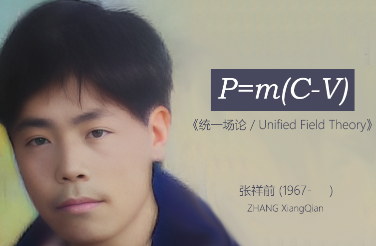张祥前，中国安徽庐江一个农民，被外星人绑架者，现代统一场论创始人。在1985年的夏天，年仅19岁的张祥前踏上了一段梦幻般的旅程，他前往一个高度先进的外星文明，在那里度过了充满奇迹的一个月的时光。不仅亲身感受了他们非凡的日常生活，更深入掌握了他们领先于地球的科学技术，以及与宇宙核心秘密紧密相连的神秘方程。正是这段难忘的经历，让他带回了一部惊世之作——统一场论，成为了探索物理学奥秘的重要宝典。
张祥前生平自述
本人张祥前，安徽庐江县人，男，农民，初中水平，1967年农历8月26出生在安徽庐江县金牛区牛首公社王渡大队小胡郢【现改名为庐江县台创园北圩村第4村民组】，现移居在3公里外的庐江县同大镇二龙新街111号，以电焊和修自行车为生。 我出生在极端贫寒家庭，不但缺少衣服，饿肚子，深秋都没有鞋子穿，只好赤脚站在稻草上，脚冻开口子，夜晚钻心的疼。 我母亲小时候差一点饿死，母亲娘家在我们牛首公社（乡）附近的石头镇，她家里本来有6个人，其中5个人饿死。 她很小被人作为童养媳领养在我们村子里，很不幸，她将来要嫁的男孩也饿死。男孩的家人把她嫁给了我的父亲，我的父亲和这个死去的男孩家是一姓、本家，而且关系很好，加上我的父亲是一个极度正直、善良之人。 我很小时候，有一次生病，太严重了，眼看就不行了，母亲没有钱带我去治疗，恰巧被我的大伯从外地回来看见，他有两个孩子不久前夭折，可能他动了恻隐之心，他给了母亲一块钱，我母亲上医院把我给治好了。 那个时候可能医院收费是很低的，我母亲经常说你的命只值一块钱，为什么当时我父亲不管我，母亲一直不愿说。有可能是父亲当时不在家。 我从小时候就经常头疼，但又不知道是什么毛病，那个时候也没有条件去查，我现在仍然经常头疼，查了很多次，也查不清楚是什么原因。小时候头疼不是一般的痛，而是昏睡，处于生死的边缘，人是恍恍惚惚出现许多幻觉。 那时候家里特别的穷，生了毛病从来不去治疗的，也没有钱去治疗，母亲只能让我睡觉，后来我的身体就像棉花一样柔软，每当我出大汗，母亲就高兴的说：要好了，要好了，果然不久就好了。 长大以后，我的身体仍然是矛盾的，有时候头疼，无力，站都站不住，有时候精力特别的好，我曾经在测力器上大吼一声，拉了590多斤，把周围人吓了一跳。 大约在七、八岁时，有一次，我一个人在一块沙地上放鹅，突然看到有几团气雾状的东西在我眼前快速地移动，其中有一团猛的扑向我，当时我觉得头嗡的一声，眼前一黑，人不由自主地蹲下去，好长时间才清醒过来，眼前的气雾消失得干干净净。 我也没有看到飞碟，只是之前看到西边的天空闪一下红光，当时大概是下午到傍晚之间，四、五点钟的样子，红光出现正好在太阳附近，而当时太阳附近又有许多红色的云霞，所以没有在意有没有飞碟之类的东西。 这是我小时候遇到的一个最奇怪的事情，至今记忆深刻。 大约从十二、三岁时开始，我夜里老是做梦，梦见自己生活在另一个星球上。在这个星球上阳光好像不是很强，光线偏蓝色。这个星球上几乎没有植物，而且表面上好像不适宜居住人，人都住在很深的地下面。人们乘坐着极快的交通工具，能够快速地来回地上、地下。 在我脑海里印象最深的是这个星球上无论地上、地下都建有大量特别巨大复杂的建筑物，这些建筑物大多数是具有铅灰色调的金属制成，整个星球颜色单调沉闷。 一个人偶尔做这样的梦，没有什么奇怪的，但是，数年、长期的做这样的梦，而且梦境有时候特别的清晰，不得不让我思考，这一切背后的原因。 除了放鹅这一次遇到的奇怪事情，本人在小时候还多次遭遇奇怪的事情，现在猜测就是遇见了外星人。 有一次我害眼，越来越严重，家里没有钱去治疗，拖了大半年的时间，从一天里偶尔有一会儿看见一点光亮，到整天几乎没有一点时间看见。 我记得当时只有到下午四五点钟时候，可以看见窗子射进来一束光线，这束光线照在房间中的灰尘上，形成一束光柱，我只能勉强看见这个光柱。 每当这个时候，我心理才有一点安慰-----我的眼睛仍然可以看见，我的眼睛还好的希望。直到有一天，这个光柱也看不到了，我终于彻底的失明了，我真是哭干所有的泪水。 我眼睛睁不开的时候，母亲用唾液涂抹我的眼睛，开始有效果，后来就毫无效果。她也没有一点办法，她拿不出一分钱，也借不到一分钱，无法带我去医院治疗。 那时候家庭极度贫困，人又都很愚昧麻木，很多孩子死了，家庭成员的悲伤程度，还不如现在死了一个小猫、小狗。 我最后接近失明，完全看不见走路，只能整天坐在床边，或者躺在床上，脑子里胡思乱想，眼前出现许多的幻觉，就是一点看不见。 有一天，我在睡梦中突然觉得屋子里变得红通通的，来了几个人，自己被人装进一个筒子里，头被一个布袋子紧紧的套住，眼睛里像有无数个小虫子在里面钻。 不久，我的眼睛竟然好了。 有一次，我得了肾炎，也拖了很长时间没有接受治疗，病情严重，后来，我连抬腿跨过门槛的都没有力气。我母亲问门口一个赤脚医生：“我家阿前这一段时间怎么好像长胖了”。 赤脚医生看了一下，连声自备：“这个浮肿，是腰炎（方言，就是指肾炎），哪里是长胖了，你们怎么这么的粗心，太晚了，可能没得救了”。 那个医生过来给我治病，嘴里嘟哝，死马当活马医。后来，我在睡梦中又觉得屋子里红通通的，来了几个人，自己被人装进一个筒子里，感觉从肛门里长进了许多柔软的管子，一直长满我的全身，不久我的病全好了，那个医生不相信这一切，连声说怪事怪事。 我母亲看见这个医生从我家门口走过，头也不回，径直的走过去，我母亲问：“怎么不代我家阿前打针”，这个医生好像很生气的样子：“你家侠们（方言，指孩子）病好了，打什么针？” 我们这儿是偏远的农村，小时候，我亲眼看见搞迷信和大神人害死了许多人，对他们这些大神和迷信有强烈的憎恨。 这些在夜晚为我治病的奇怪人我当时认为就是神来了，所以心理很矛盾，直到以后在杂志上看到外星人的事情，我心理的疙瘩才解开了。 我在上初中时,看书上介绍外星人，我猜想，小时候我放鹅的时候肯定遇到了外星人，就在我和他们相遇的一刹那，他们有一个人的意识和记忆可能进入到了我的头脑中，我脑子里以后一直残留了这个外星人的记忆，才做那样奇怪的梦。 “我”天经地义就这么一个，但是，从我懂事开始，也可能从我七八岁时候的那次放鹅的奇怪经历开始，我始终觉得我的头脑中存在着另一个“我”。 这些奇怪的经历我也曾经对周围的人讲过，别人都认为我在扯谎，我的邻居是我的一个大伯，叫张后发，经常看见我就叫“谎老三，谎老三（方言，我们这儿传说中的一个扯谎高手）”。后来，有很多奇怪的经历只好闷在心里不对人讲,特别是在成年以后。 从七、八岁到19岁以前，我数次遇见外星人，19岁那一次接触外星人，踏上了外星球，旅行了一个月时间，以后再也没有遇见外星人，和他们再没有任何联系，也没有什么奇怪的经历了。 七、八岁以后所遇到的外星人我猜测不是放鹅遇到的那种外星人，放鹅所遇到的外星人可能是科技极为发达的一种，后来这些外星人科技水平差些，也可能是差得很多。他们的目的有可能是冲我那次放鹅的经历去的，有可能是想从我身上得到点什么。 放鹅那次经历以后，数次遇到的外星人一般都发生在夜晚，而且预先感觉到，心理在说，他们要来了，他们要来了，不久，他们果然就来了。 他们来的时候，不说话，我也能够知道他们的意图，那时候，见到这些神秘人，心里没有丝毫害怕的感觉。他们一般都是夜晚来，首先都是看到墙壁发红，一来就叫我出去，出去都是从墙壁上直接穿过去。 回来是时候，也是他们送我回来的，都是早上送回来，一般都是把我送到床上，我也一度怀疑这是不是在做梦。 有一次，他们送我回来，我说，就把我放到村子牛屋门前的一个草堆上就行了。第二天，我果然就睡在草堆上，我起来回到家里，母亲已经起来了，开了门，她在扫地，没有问我从那里来。 多年以后，我也在内心怀疑自己小时候这一切遭遇是不是在做梦？但是，睡在草堆上的事情，千真万确，使我坚定的否定了这一切遭遇只是在做梦的念头。 1985年初夏，我19岁时候再一次，也是最后一次遇到外星人，以后和外星人就没有联系了。 我出生在1967年，按我们农村人的算法，虚岁是19岁。我确定是在1985年遇到外星人的依据是：我当时写了很多信，说自己19岁。按照我们农村的算法，我是1967年出生的，应该是1985年。不是我当时从外星球回来就看日历，当时也没有要去找证据的想法。 我19岁遇到外星人，被他们带走，踏上外星球旅行了一个月时间。但是，在我们地球上，只是一夜的时间，他们的时间和我们不一样。 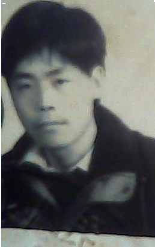 张祥前27岁时候的照片 这一次我已经成年了，而且亲身去了外星球，所以给我印象最深，强烈的震撼了我，使我内心里确定多次遇到外星人的事情是真实的。 从外星球回来后，由于受到强烈震撼，也隐约意识到外星人科技可以引起地球上天翻地覆的变化，我当时疯狂的对外宣传这个事情。疯狂向有关单位写信，几十年时间里，估计写了数千封信，大约只有几封回信，回信大都是“这个事情与他们无关”这么冰冷冷的语句。 由于长期写信，引起右手中指变形，期间还申请了新型钢笔的专利。 我也带着资料上门找过有关单位，他们根本就不看我的资料，也不听我的解释。 有网友说这些人可能无法接受一个农民遇到外星人的事情，认为这个事情太过于荒唐。 其实很多情况下，我根本就没有提外星人的事情，有时候，我还没有开口说话，有可能是他们看我衣服穿的不乍的，一开口就叫我滚出去！ 由于我写的信绝大多数没有回音，即使回信也都是这事情于他们无关，上门也没有人理睬，我的热情也渐渐的退了。 我对物理比较感兴趣。碰到书中讲到的磁场, 我心中想“场”是什么东西，我头脑中另一个“我”马上就给出答案： 场的本质就是运动变化的空间而已，对于这个答案我很长时间都是似懂非懂的。 有一次看到一本杂志上面介绍了爱因斯坦的相对论，我马上心中又有疑问，时间的本质到底是什么？我头脑中另一个“我”又告诉我： 时间是观测者对周围空间光速运动的一种感受。 我第一次得到这样的答案，好长时间都不能够理解时间的本质为什么是这个答案。如果从我的逻辑出发给时间下定义的话，我肯定认为时间是宇宙中物体持续运动的过程。 几年下来，对于人们生活中遇到各种各样不理解的事件，像时间、空间、场、物质、光、万有引力、电磁力、能量---的本质我都可以做出解释，甚至像飞碟的飞行原理是什么，预言家为什么能够预言未来？人的生死、灵魂之类的问题，都可以给出答案。 不过，可能是我的文化水平低，涉及到理论部分的，特别是数学方程，有许多东西不能够理解，似懂非懂，模棱两可，有很多问题我即使给出解释也是不清晰的。 记得刚才外星球回来不久，我还记得不少外星人给我的数学、物理方面的重要方程，我用一个练习本记录下来。有一次，放在桌子上，被我哥哥喝茶弄潮湿了，我对哥哥说这个本子记的内容很重要，责备了我哥哥几句，哥哥很不高兴，等我离开把本子撕得粉碎，我保存了一些碎片，但后来也丢失了。 我小时候的性格是老实、本分、胆小、木讷、呆板，站在一个地方半天不动步，见到生人不敢说话。我小时候说话说不清楚，加上那时候穿破烂衣服，衣不遮体，经常被人耻笑、呵斥，造成严重的自卑心里。 我读书很勤奋、刻苦，但是，倾向于死记硬背，多做作业，小学的时候，只有语文、数学，成绩还不错。但是，到了初中，课程多，单凭勤奋、刻苦，死记硬背，脑子不灵活，成绩不是很好。 初中毕业后，由于成绩不好，我未能考上高中，后又复读一年，两次考高中，连预选【那时候初中考高中，先预选，预选通过了，才有资格考高中】都没有考上，只得回家种田。父亲对我很失望，气得打了我一扁担。 受19岁那年遇见外星人的事情的刺激，我想自学数学和物理，把头脑中似是而非的东西搞清楚。不久，我跑到合肥科教书店买来物理和数学书想自学。 但是，由于没有经验，我买来的是研究生进修用的参考书，而不是通用教材，物理书通篇都是数学符号，少有语言描述部分，我根本就看不懂，自信心锐减，第一次自学不了了之。 几年后【大概是1989年】我又跑到芜湖去做生意。来到芜湖不久，遇见一个老者，很慈眉善目的那一种，讲话满嘴之乎者也，他说： “我给你看一个相，你是一个不简单的人，你将来有可能影响整个人类的历史”。 我以为他是一个骗钱的江湖骗子，摇摇头，回答到：“我是一个农民，哪有那么大的能耐”。 他把我的左手看来一看，说：“你的左手有一个田字，你就是传说中的圣人，正是我们要找的人。” 我看了看左手，没有看到田字，那个老者用手在我左手上这么一比划，还真的有一个田字，以前我根本就没有注意这个。 我说：“胡扯，我是什么圣人？我将来要当世界领袖，地球总统？” 老者说：“随着社会的进步，将来会越来越民主，民主国家里政治家、总统只不过是一个小丑而已”。 我当时对西方民主很向往，对于老者这个话立即反驳：“民主国家领导人是小丑，那独裁国家领导人就是高尚的？” 老者笑了一下：“是我的话没有说清楚，民主国家的领导人像一个逗小孩开心的小丑，他们是一个演员，只能表演，一举一动都是幕后的专家在指挥，他们不会做出什么出格的行为来，将来剧烈影响人类日常生活的的不是政治家，而大科学家，重大的科学发现，会彻底的改变人类的生活”。 “这个和我扯不上一点关系。” 老者说：“不是的，你有神人赐给你的科学，你用神人的科学造福人类”。 我立即联想到我获得外星人的科技理论的事情，心里一震，但是我仍然不相信他。问他是怎样知道我的，他说他是圈内人（我当时从一个自称是上海人那里，知道圈内人就是指一些【与潜伏在地球上的外星人有关】特异功能的人组成一个内部沟通的圈子，这些人人受到内部的约束，不能够轻易的向外界透露身份和特异功能，否则可能受到严厉的惩罚），但是我仍然装不知道。 后来他一口说出我老家的地址，说他到我的老家找过我，并且说出我老家房前屋后的一些细节，听人说我到了芜湖，他就又来到了芜湖。 我反问他：“你找我干什么，既然你是特异功能人，为什么不把我搞到国家里搞研究？” 老者说：“找你，是希望你刻苦学习现代科学基础知识，把神人的科学用我们的语言讲清楚，你的东西才有可能被普罗大众接受”。 老者说富贵自有天安排，不要过分的去想得到，并且转弯抹角的批评我还没有正式做科学研究就一心想得到富贵。 后来，老者大致预言我以后的人生经历，现在对比看，基本上都应验了。 最后他说：你将来会许多人骂你，许多人称赞你，这些人都不会改变你的命运，你还是你，你的命运中有贵人帮助你，你才能够被社会接受。 我忙追问是什么贵人能够帮助我，老者说：“中国过二千年就会出一个圣人，圣人之后可以帮助你”老者说完后就离开了。 我现在想一想，圣人之后，可能就是孔子之后吧，这个贵人是不是姓孔？ 受老人的鼓舞，我到芜湖的一些书店买了一些物理教科书，说起来也奇怪，芜湖的商业很发达，在1989年想买几本适合用的教科书却很困难，这些书同样不理想，相对论只是简单的提一下，没有数学论证。而且，相应的数学教科书始终没有买到。我又到废品站买了一些书，同样的不适合自学。 要命的是我一看教科书头就疼，我明白我是一个意志力不坚强的人，这个我是辜负了老人的希望。 在芜湖我自学没有实质进展，关键是对高等物理和高等数学完全的看不进去，产生了恐惧和自卑思想，认为我没有这个能力去搞懂这些。不过，在芜湖，我对物理学有了一个大概的了解，但数学一点也没有学过。 后来我遇到一个身材高大的胖子，他向我吹嘘他是气功大师，我根本就不相信他的话，在我看来，练武之人都是细腰宽臂，哪儿有肚大腰圆的。 有一次，他被我顶得够呛，他说：“你手伸过来给我试一试。” 我就把手伸过去，他用小拇指不经意的在我的手臂上敲了一下，一种触电般的疼痛袭来，我的手臂立即鼓了起来，像一个小泥鳅一样粘在上面。 这下我领教了他的厉害了，同时也对气功产生了浓厚的兴趣。在芜湖，我向大胖子学了一些气功的基本常识。 气功入门不难，难在坚持，要每天早上起来练功，我没有坚持几个早上，由于懒散，就再也爬不起来了。后来，我发明了睡在床上练气功的方法。这个睡在床上练气功想不到给我打开了一个奇异的世界。 人练气功的时候，要抑制自我意识，然后会进入了一个似想非想、恍恍惚惚的状态，在恍惚状态下，我经常做那种奇怪的梦变得更加清晰。19岁那一次外星球经历的细节，也回忆了很多。 练气功使我从被动的等待到了能够主动搜素，在梦中，我就像生活在某个外星球的其中一员，我在那里生活、工作、学习，与人交往。 从我的得到的信息来看，这个星球上的人科技高度发达，我觉得地球人可能要上几千年、甚至万年才能够达到他们的科技水平。他们对时间、空间、场、物质、宇宙----的看法和我们地球人看法是很不一样。 从芜湖呆几年回来后，当时由于家里生活困难，我经常白天做农活，夜晚还要去捕鱼。生活艰苦加异常劳累不讲，而且枯燥无味，一点前途也没有。 后来我结婚了，我们夫妻关系不好，经常的吵嘴，原因主要是钱、经济困难，还有妻子凶悍、胡搅蛮缠、无事生非，我无力改变现实，经常忍受妻子的无端辱骂。 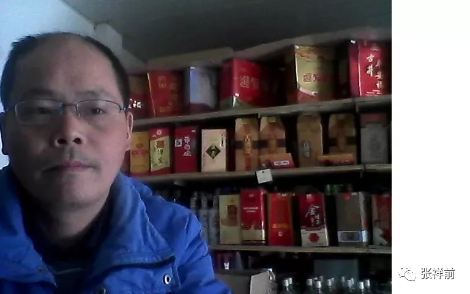 张祥前 我当时想的最多就是如何出人头地，或者能换个好一点的环境去生活。我自然地想到，我除了具有两个“我”这个特点和19岁时候遇到外星人外，别无所长，因而只能在这个上面做文章，才能使我摆脱困境。 很简单的想法就是从另一个“我”那里讨问一些最先进的物理理论，然后变成我的，这样自然就可以出名了。我在读书的时候，相比较对物理感兴趣。 从那时候开始我就认真的地干了起来，我又一次的自学起来。 原来只是偶尔向另一个“我”问一问时间呀、空间呀、场---是什么东西，从那以后，我开始有目的的去研究这些问题，但是进展很不顺利。 虽然我可以从另一个“我”那里获得一些对物理慨念的本质的解释，比如，时间、场、质量、电荷、光、光速、能量---这些物理概念的本质是什么，另一个“我”可以给出准确无误的定义，但是对于这些孤立的慨念的解释我却很难把它们串联在一起，形成一套完整的理论体系。特别是用数学去处理，感到更加困难。 我是经常这样想，外星人给了这些理论上的点，如果要把这些点连成线，就需要我自己做出努力。 多年后，我自己冷静的想一想，除了外星人提供这些理论外，实际上没有我自己的东西，我明白自己只是一个普通人，但是，芜湖那位老者说我未来剧烈影响人类的有鼻子有眼的话，常常在我的耳边荣绕，又使我陷入矛盾之中。 实际上在很长的时间内，都是芜湖那位老者给我的话支撑了我的信念，如果没有这个老者，我可能早就放弃了研究、宣传外星人科技这件事情。 一想到芜湖那位老者背着手、满嘴文言文讲话的样子，我就给自己打气，在心理默念：“我不是一个普通人，我可能影响人类历史，我一定要干下去---”。 现在想一想，那一段时间的失败，关键的是我对数学毫无兴趣而没有学习数学，仍然没有适合的教材也是一个至关重要的原因，当然，我整天忙于生计，妻子经常无缘无故的吵闹、辱骂，我的懒散、意志力不强也是一个主要原因。 我当时也写了不少信给中国科学院物理研究所，可是每次他们总是说这一切于他们无关，后来就不了了之。 我也写了不少信给大学和有关单位，我自己也亲自去过有关单位、中科大等大学，里面的人几乎的都是相同的一句话：“滚出去！”。经常被看门的像撵狗一样撵出来。 我也向电视台、新闻媒体介绍过我的事情，我曾经打电话给电视台，安徽经视的第一时间栏目接电话的人挖苦我，“·····你叫我们采访你，我们就采访你？你以为你是什么人？” 没有人理睬我，渐渐的我就失去信心。 相当长一段时间，我放弃了这件事，不去过问。 我也投过很多稿子，一般没有回信。一个编辑给我的回信说：“---你有很好的想法，但是，你要用数学把这些表达出来，数学是物理的通用语言，没有数学，物理讲不清楚，没有定论。 我不要你有黎曼几何、傅立叶分析这些高深的数学，可是你连最简单的微积分都没有----” 后来，生活的种种不如易，使我再次狠下决心自学，一定把外星人的超前理论讲清楚，好出人头地。 我的一个堂弟在合肥教书，他读过大学，他从合肥带来几本书，他带来的书是普通的教科书，清华大学的《普通物理》和《高等数学》，很适合自学，尤其是数学书，通俗易懂。 有了通俗易懂的教科书，我的进展很快。 互联网传到农村，我又转移到网上，利用业余时间研究、宣传外星人科技，特别是他们的统一场论理论和人工场扫描科技。 现在在网上搜“统一场论6版”，“人工场扫描”“张祥前”“揭秘外星人飞碟飞行原理”······可以搜到我发布在网上的与外星人科技相关的前沿科学理论。 我至今已经坚持了38年宣传外星人科技，很遗憾，仍然没有能够引起社会关注、重视。这个不光是很多网友，就是我自己也是感到疑惑不解，特别是我们现在处于互联网时代。 我打算继续在网上写文章，写科幻小说，争取出名，一旦出名，我带来的外星人的人工场扫描超前科技就会百分之百的被社会重视，就是有些人不高兴，但是，谁也是无法阻挡的。 这个可能是我成功唯一的一条路，很多网友建议我搞实验，当然实验我不会放弃的，现在已经和网友合伙搞实验。只是我有一种直觉，我们的条件简陋，资源有限，实验成功的可能性不大。 二，我的母亲 我的母亲出生在庐江县石头镇一个渡口附近，家里一共有六口人。家庭是极度、极度的贫困。 我母亲10岁不到，就被她的亲戚领到了我的老家，庐江县牛首公社小胡郢一户人家当童养媳，来了不久，我母亲老家5口人就全部饿死。 我的母亲 很不幸的是，我母亲将来要嫁的男孩也饿死了。那个男孩家也是极度贫困，管不了我母亲。 我听人说，有一段时间，我母亲像个野人一样，在田野上摘野果子、野草吃，也差点被饿死。 后来，那个男孩的家人考虑到我的母亲老家没有人了，就把我母亲介绍给我父亲，因为我的父亲和那个男孩家住得很近，关系很好，又是同姓本家。另外我的父亲也是一个特别忠厚老实的人。 我的父亲 我在几十年时间里，从来没有看到我的父亲和母亲吵过一句嘴。我的父亲很勤劳，会抓鱼、踩藕，使我母亲摆脱了饥饿的威胁。 我的父亲弟兄4个，两个妹妹，饿死一个。我的奶奶因为我母亲出身卑微的原因，看不起她，经常辱骂她，给她小鞋穿，给她难堪，刁难她。有什么好东西从来都不给我母亲，给另外三个媳妇。 但是，我的母亲是一个极为善良的人，从来不和婆婆计较这些，后来，我的奶奶和爷爷老了，一无所有，他们把能给的都给了另外三个媳妇，连住的房子都没有，可笑的是三个媳妇对他们是不闻不问。 我父亲为他们在我家隔壁盖了房子，他们年老时候，只有我母亲在默默照顾他们，从来就没有抱怨过他们。 我的奶奶临死的时候，对我母亲说： “周毛子【我母亲的小名】，我对不起你啊，这辈子不说了，到了天堂再报答你的恩情吧。”我的奶奶和母亲都是虔诚的基督教徒。 我母亲4个孩子，我有一个哥哥，两个妹妹。我的母亲最喜欢我，对我的性格影响也是最大的。 我母亲善良、正直、坚忍不拔，不愿意与人争，从来不想给人添麻烦，从来不在人背后说人坏话，无论什么委屈，默默一个人承受下来，从来不向人抱怨。她的这些性格，深深的影响着我。 她经常告诫我，“不要和人去争一个东西，你有时间去争，不如用这个时间去挣钱，把那个东西买下了。” 我从记得事情开始，家里就一个子“穷！”，这种穷不是一般人所能够想象的。 那时候没有衣服穿，我只有一个裤衩，如果洗的时候，上学我只好穿一个长汗衫，呆在教室里不敢来回走动。 那时候还没有鞋穿，秋天脚冻得开口子，冬天只好站在稻草上。 没有床，晚上睡觉时候，用木板临时搭一个床。 没有蚊帐，蚊子是我童年的噩梦。 下雨天，家里到处漏雨。 经常饿肚子，我童年的一切想象、美梦都与食物、吃有关。因为特别的馋，经常被大人训斥，觉得自己长大了肯定没有出息。 生病了，从来不去看医生。我门口一个女孩，人家都叫她小八子，我问我母亲，“她只有一个姐姐，一个哥哥，怎么叫小八子，应该叫小三子。” “其余统统都死了。”母亲淡淡的说。 有一次我生病太严重了，母亲感觉我不行了，万般无奈的的情况下，开口向我大伯借一块钱，去医院把我治好了。那时候，我大伯刚刚夭折了一个孩子，动了恻隐之心，要不然，断然是不可能借钱给我母亲的，我母亲也很清楚这一点，平时从来不向他借钱。那时候，我的父亲可能不在家。 那一次在去医院的路上，遇到我们同村的一个村民，那个村民对我母亲说，“你把死孩子往医院里送干吗？挨医生骂是小事，主要是你把钱白白浪费了，没有指望了，回家埋了吧。” 我的哥哥结婚后，立即就和我父母亲分了家，我和父母亲一直没有分家，一直到他们去世。 在和我的父母亲生活中，我的妻子虽然凶悍，经常的骂我，也辱骂我过父母亲，但是，每次炖汤、烧好菜的时候都要送一份子给我父母亲，而我的两任嫂子，从来就没有送过一次好吃东西给我父母亲。 每到过年的时候，妻子准备红包恭恭敬敬的给我父母亲，并且说父母亲是真神，庙里是假神，给钱给父母亲才有好运。而我两个嫂子没有给过一分钱给我父母亲。 我父亲得了癌症的时候，妻子一下地拿出了一万多出来，后来陆陆续续的也拿出不少钱，而哥哥嫂嫂一分钱都不肯出。更过分的是，哥哥竟然瞒着我们偷偷的把父亲因治疗癌症的医疗保险的钱领去了，无论后来我们怎么追要，他就不还一分钱。父亲生病了，他没有出一分钱，反而倒赚了几千块。 我母亲得了脑血栓，花去了一万多，哥哥嫂子也一分钱不出，我叫哥哥到医院去看看我母亲，哥哥都不肯去。 我哥哥前任老婆，品德恶劣，对我哥哥说，“你白天去人家干活【是干木匠活】，夜里下网捕鱼。”完全不考虑我哥哥的休息。 对我父母亲无端仇视，有一次，我父母亲把养的猪杀了，送一副猪蹄给他们，哥哥把猪蹄卤熟了，还没有来得及吃，就要到颍上县去。 “这些猪蹄怎么办，送给老娘他们吧。”哥哥说。 “扔了也不给那一对老猪吃。”说完，嫂子把猪蹄扔到门前荒草中。说我善良的父母亲是一对老猪，当时把我气得是眼冒金星。 我的哥哥后来娶的老婆也不是东西，有一次，母亲来我的超市，哭着对我说大嫂用菜刀背打她。 我带着母亲跑去质问大嫂，“你为什么要打我妈妈？” “我叫她洗衣服，老是洗不干净。”嫂子说。 “她不给洗衣粉给我，我怎么洗干净？”母亲说。 “要，你儿子开超市，有的是洗衣粉，你怎么不去拿？”嫂子阴阳怪气的说。 “我为你们干活，去拿小儿子的东西，合适吗？”母亲说。 “要，你怎么时刻都向着你小儿子，你就是喜欢你小儿子，小媳妇，不喜欢我们，你承认不？” “我吃、穿、用，生病花钱，一切都是阿前他们给的，你们一分钱都不给，你叫我怎么喜欢你们？”母亲说。 “你这个吊女人，你们一年到头，老娘你们是一个子都不给，对老娘是不闻不问，还叫老娘为你们洗衣服？凭什么？今天如果老大在，我要当着老大的面劈你！”我气愤有点控制不住，想动手。 “你来啊，来啊，”嫂子毫无畏惧。这个时候，当地的基督教的人听说我母亲被大嫂打了，几个人赶来，大声说， “你婆婆那么的善良，你怎么能够打她？肯定是魔鬼上了你的身了·····” 后来在基督教的人的劝说下，我把母亲搬到我们超市附近住，离开了大嫂他们，本来母亲住在大嫂隔壁。 我的父亲生病去世后，母亲一个人独自生活，住在我的哥哥隔壁。 我父亲去世后第七天，哥哥打来电话说，要我到他家去一趟。我问什么事情啊？ “什么事情？父亲去世第七天，你说是什么事情？”哥哥说完了立即挂了电话。 我们这儿的风俗是老人去世第七天叫头七，要烧灵，就是请一个山人【农村主持葬礼的人】用纸扎的房子、汽车、电视、冰箱之类的东西，晚上在去世老人坟山一把火烧掉，算是送给死去的老人。 那天我生意很忙，没有去哥哥家。晚上，哥哥又打来电话说要去他家吃饭，我说没有时间去吃饭，哥哥说小罗和小潘【我的两个妹婿】也在，我们还有事情要商量。 我骑着电动车赶到哥哥家，嫂子热情的叫我坐下来吃饭。在座的还有附近我的两个本家长辈和一个陌生人，哥哥指着这个陌生瘦瘦的、黑黑的中年男人对我说， “父亲去世第七天，按照我们这儿风俗要烧灵给父亲，今天我们请来这位严师傅，忙了一天，把灵扎好了，在父亲坟前烧了，知道你忙，就没有硬要你来。烧灵费用总共1800元，我们哥俩加两个妹婿，一共4个人，一个人摊450元，你要把整个450元交了。” “这个钱你们三个人交吧，我没有要求给父亲烧灵，也没有出这个主意，我不反对你们这么做，也不赞成你们这么做，你们有你们的想法和自由，我不能代表你们，但是，你们不能代表我，谁要求给父亲烧灵，谁出钱，”我冷冷的说。 我的话令哥哥很气愤，“阿前，今天没有叫你人过来，原谅你忙，这个钱你还敢不出？！” 我说，“老大，今天给你一个面子，先警告你一次，你再说一个敢子，我把你桌子掀了，你相信不？” “我相信，我相信，你先坐下来吃饭，我们这不是在和你讲道理、商量吗？”哥哥口气缓和下来了。 两个本家长辈立即批评我， “阿前，这个就是你不对了，头七给去世老人烧灵是我们这儿传统，又不是你哥哥他们发明的，家家都这么做，为什么就你反对，阿前，看你平时讲情讲理的，现在这么这样啊？你不怕村子人说你不孝吗？” 那个山人也帮腔，“我见多了，兄弟姐妹中，总有一个奸猾、小气的，轮到摊钱的时候，就想耍赖。你这位阿前哥我看面相不是一个奸猾之人，但是，看你是小气，舍不得为父亲化这个450元钱，看来也是一个不能做大事情的人啊？哈哈哈” 我立即反驳，“这位严大山人，你恰恰说错了，为父母亲化钱，我阿前是最舍得的，我父母亲这几年老了，他们4个孩子，生活费一直是我一个人出，从大米到洗衣粉、到油盐酱醋、啤酒，到一切生活用品，都是我送去的。 我经常给钱给我母亲，母亲经常生病，是我一个人用三轮车接送，治疗费一直是我一个人出，哥哥一分钱不出，不闻不问的，我从来就没有对他们说要他们摊钱。 两个妹婿和妹妹家离得远，照顾不周，不能怪他们。但是，哥哥在父母亲隔壁，不闻不问，这样对吗？ 如果我说的是假话，严大山人，我哥哥就在你对面，你问问他，有没有半句是假话？ 我老婆非常凶悍，还经常送肉、送衣服给我父母亲，每年过年的时候，都塞给我父母亲每个人几百元红包，这些都是我的行为影响了她。 你现在问问我大哥大嫂，这几年来，有没有给我父母亲一分钱？送过一斤肉，一件衣服、一样东西？ 就是在前几天，母亲说电视机坏了，我送来一个彩电，一千多元，我要求他们三个人摊钱吗？” “哈哈哈，”那个山人问我哥哥，“你弟弟这些话不会都是真的吧？看面相，你弟弟不像是这种大方的人啊？” 哥哥干咳了几声，没有回答。 我回答了严山人，“我的确不是一个大气的人，花钱很节省，但是，为父母该花的钱就要花，不该花的钱就要节省，父母亲活在的时候，要尽可能去照顾他们，使他们生活好一点。 死了，你使劲的去化钱，这个钱他们死人得到了吗？都给你们这些山人赚去了，保佑了谁？保佑了你们这些山人，其实你们这些山人都是骗子，钱进入了骗子的腰包。 中国许多人父母亲活在的时候不去关心照顾他们，死的时候大操大办，搞得惊天动地，都是极端虚伪的表现，这些人大多数都是社会人人渣，人品极端恶劣的之人，我极端鄙视这些人。” 我没有吃饭站起来准备回去，出门时候仍然听到严山人在问两个本家长辈，我说的话是不是真的？两个本家说他说的话都是真的，他是个怪人，嘴巴很厉害，干布都怕他。 有一天夜里母亲得了脑血栓，被我的女儿看见，我和我的妹婿连夜把她送进医院，虽然她的命保住了，但是，留下了严重的后遗症，生活不能够自理。 我的哥哥对其不闻不问，住院的时候都没有到医院看她一眼，就连医疗费一分钱也不出。嫂子在我们的严词压力下，带一些保健品去医院看我母亲一次，以后就再也不管不问。 他们是典型的有好处拼命的要，承担责任就拼命的推诿。 母亲瘫痪后，我一个人照顾她五年，直到她去世。哥哥对母亲不闻不问，两个妹妹因为家远，来回不方便，忙于生计，生活压力大，只能偶尔来看一看母亲。 哥哥对母亲不闻不问，我的妻子觉得吃亏了，对此很恼火，经常和我激烈的吵嘴，五年时间里，为了这个事情，我无数次遭到妻子的辱骂。有一次，她骂我几个小时，最后撂下狠话： “张祥前，你要么要你妈，要么要我，两个人只能选择一个，给你一夜的时间考虑，你如果坚持要你妈，明天我们就去离婚。女儿归我，儿子给你，超市给你，老家房子给我。” 岳母看情况不对劲，急忙向我们下跪，希望我们不要再吵下去。 第二天，妻子拿着户口本，对我说，“你考虑好了没有，要我，还是要你妈？要你妈的话，我们今天就去民政局，把婚离了！” 我回答说， “我不想离婚，离婚打光棍被村子里人耻笑看不起。但是，母亲总得要人去照顾啊，总不能把她扔在路上不管吧，要是那样的话，我怎么在社会上立足？不是说我这个人是多么的好，多么的孝顺，我也是别无选择啊。 我能够照顾生病的母亲，只能说我是一个正常的人，像我哥哥那样对生病的母亲不闻不问，不是正常人，是人渣，真正的坏人，如果我也是这样，你不害怕我吗？一个男人可以狠毒的抛弃生病的母亲，对自己老婆能够好到哪儿去？这样的男人和你生活一生，天天就睡在你身边，你不感到恐惧吗？” 妻子听了我这话，沉默了，她可能意识到，一个有爱心、真诚可靠的男人，对于女人的一生才是最至关重要的。 我母亲在临死的前几天，她坐在椅子上晒太阳，这个时候她看起来精神比往常要好得多，她突然对我说，“阿前，我把身上的钱给你。” “我不要你的钱，你钱留着自己以后花。”我一直忙于生计，没有时间照顾母亲，觉得愧对我母亲，只好经常塞钱给她，希望她买菜吃的，但是她舍不得化，余下来了。有一段时间，她一个人单独过。 “以后，恐怕没有机会了。“母亲喃喃的说。 没有几天时间，一天早上，我帮母亲穿衣服起床，我盛粥来给她吃，她突然叭在桌子上昏倒，我扶她时候，她已经四肢僵硬，不久就死去。 母亲死的时候，哥哥没有来参加母亲的葬礼，不闻不问，也一分钱都不出，我的妻子有火没有地方发，又把我狠狠的骂一顿。 有人把我母亲的衣服抱出来，准备烧了，有人提醒我，“阿前，你母亲的钱可能藏在衣服里，叫人找一找。” 妻子听说后，大喊一声，“不要找，哪一个敢找？统统烧了！” 我很奇怪，妻子爱财如命，这会儿因为嫌弃我母亲，居然连她的钱一块儿嫌弃？ 但是，她厉害啊，没有人敢找，衣服被烧了，有没有钱在里面，没有人能够知道。 母亲送到庐江火葬场火花的时候，看到烟雾飘到空中，我想只是有钱人才怕死，苦难的人死了，是一种解脱。我想母亲是不是真的到了天堂？天堂里不会有人世间这么多丑恶的嘴脸吧？ 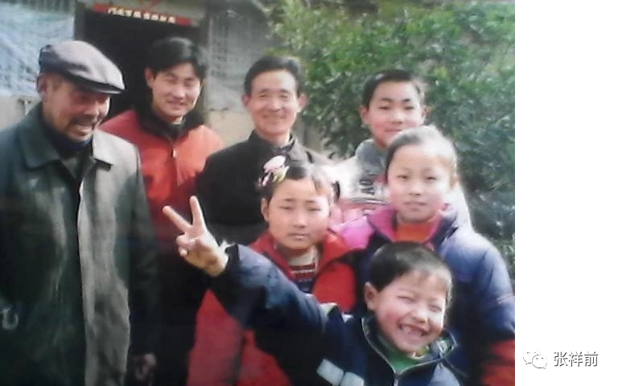 我的家人 三，我的妻子和我的农村小店 我的老婆不是媒人介绍的，是我自己找的。我们那时候的农村自由恋爱是很少的，大部分都是媒人介绍、父母亲包办的。 刚开始和她见面时候，感觉她人还算漂亮，身材也好，身体强壮，就是眉宇之间透过一股凶悍相。 我在芜湖做了几年小生意，把找对象最佳时期错过了，到了26、7岁了，农村很多人20岁就结婚。那时候，我家庭困难，她又比我小6岁，所以我就没有在乎她的这个缺陷。 但是，婚后多年，我才领教到了她的凶悍可不是一般的凶悍，令人恐惧的凶悍加上极度胡搅蛮缠、蛮横不讲理。 我们结婚后，是经常剧烈的吵嘴，每次都是她挑起的，吵嘴的主要原因她太挑剔，难伺候，对很多事情都是看不顺眼，还有钱的原因。 我不抽烟、不喝酒、不赌博，也没有其他开支，几乎就是干活，但是，收入不高，她自然是不满意的，女人是天生的爱财。 普通人没有官方背景，要发财，只有做生意，打工、出苦力肯定也是发不了财的。我把这些道理讲给她听，她却很反感，她有一个习惯，钱到手，就死活不出来。做生意要本钱的，所以，我也没有强烈的和她出去做生意的想法。 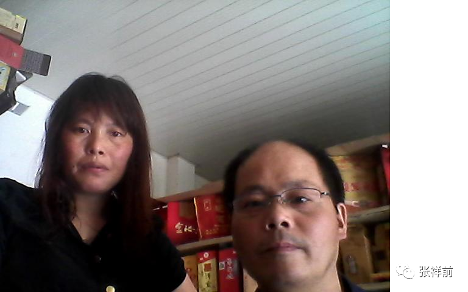 我和我的妻子 结婚头几年，我年年挖黄鳝，这个不要本钱，一把大泥锹就行了。现在想想，我人生最快乐的时候是挖黄鳝哪一段时间，我一出家门，到了田野上，没有了妻子没完没了的数落、埋怨、唠叨，心情格外舒畅。晚上回家，有贩子来把黄鳝收走，我把钱交给妻子，就没有我的事情了。 第二天，我向妻子要一个中午下饭店的饭钱，又去挖黄鳝了。 那时候下饭店要5元钱，妻子经常给4元，这个使我心寒，后来我只好藏钱了。 最让我心寒的是有一次冬天，我们几个人走出了10几里路，天突然下雨，没完没了的下，没有办法，我们只好冒雨跑回来，我身上连内裤都被淋湿了。 由于太冷了，只好不停的跑，让身体产生热量，腿都抽筋了。回到家里，我坐在床沿换衣服，妻子突然大喝一声：“你妈的B，瞎了眼啊，把床单弄湿了。” 我刚转身坐上了板凳，妻子又大喝一声说板凳脏。 我只好站着换衣服，“你今天怎么啦？像吃了枪药？” “你妈的B，一条黄鳝没有挖到，••••••”妻子又没完没了的开始数落开。 1996年，我申请了水笔专利，1997年，香港和广东有公司要买我的专利，他们说我的专利要评估，评估后就买我的专利。我花了几千元【这个是我们当时几年的收入】把专利做了评估后，这些公司就没有了任何音讯，我也意识到了上当受骗了。 这次受骗对我是灾难性的，妻子为此骂了我无数次，并且彻底看不起我，对我是极度不信任了，以后，我投资做什么事情，她都是毫不犹豫的极力反对，在经济上对我是严厉封锁。 这几年，我研究、推广外星人的人工场扫描技术、统一场论，经常在网上写文章，发论文，介绍我小时候遇到外星人的事情。 门口有些有文化的人和乡村干部，看到我妻子，就说：“你家张祥前不简单啊，网上名气大的很啊，写的论文在美国都发表了，听说北京都有人来拜访啊。” 我的妻子每当听到这个话，她习惯了在众人面前数落我，为了扫我的面子，都会及时的补上一句：“我家阿前搞那个事情被人骗去了几千块钱。” 我岳父经常对我说，“阿前，你要有一个手艺，老是挖黄鳝不是个事情，一身泥巴，被人看不起的。” 1999年，我从岳母借了3500元钱，和哥哥在三河镇开了一个电焊修理部。我没有搞过电焊，哥哥会电焊，他生意刚刚失败，没有钱投资，钱都是我借来的，没有敢向我的妻子要钱。 一开始，我妻子对电焊部不反对也不支持。我的大嫂是一个真正的恶女人，经常威逼哥哥离开，原因很简单，她想看我笑话，一个没有焊过电焊的人如何支撑一个电焊修理部。 最后，我的妻子也加入吵架行列，剧烈的吵闹，哥哥被气得吐血，看到他吐在地上的鲜血，我只好同意他离开。 我一个人夜里反复的焊电焊，忍受了几次剧烈的眼疼，一段时间后，我掌握了电焊技术。哥哥走了以后，顾客很少，收税的、收费的经常上门，电焊修理部在妻子极力封锁【吃饭的大米都不给从家里带】和吵闹中关了门。 记得有一次，她把我的修理部门钥匙藏起来，我是地毯式找，才找到钥匙，否则，我可能要在冰冷的电焊修理部门外站一夜。 我把修理部的东西全部拉回了家，又开始挖黄鳝了。这一次，我下定决心，一定要把修理部重新开起来。 我在村头租了一块地，开始了修理部计划。妻子一开始，不反对也不支持，我以前挖黄鳝的钱都在她身上，但是她是一个子也不给的。 我是挖一短时间黄鳝，买来砖，挖一短时间黄鳝，买来瓦，就这样我的农村电焊修理部又要成立了。农村电焊修理部房子最后要填土，因为地势太低了。我叫来的拖拉机手问我： “你为什么不把你老婆叫来，一起挖土，快一些啊。” 我心理说，我老婆厉害，怎么敢叫她，但是，我觉得在别人面前说妻子坏话是不妥的，就说：“她有别的事情的”。 我正说话，突然妻子出现在我面前，质问我为什么要填土，“你填土干什么，是不是想埋你？” 填土完成了一半，被妻子威逼停了，留下了严重的后遗症，下暴雨时候，经常一个修理部地面全都是水。 修理部经营一段时间，受到了许多村民的好评，由于农村费用低，开始赚钱了，但是，妻子也加紧了马力吵架。 有时候我很奇怪，赚钱了，她为什么仍然要吵嘴，反对开修理部。 我把修理部焊一个大铁门，晚上不去看，小偷看见这个大铁门也只好叹气。有时候，晚上被妻子吵嘴吵急了，我就跑到修理部，找一块木板，不脱衣服睡觉。 有一次晚上，被妻子无端辱骂一个多小时，我一声不吭，她仍然没有停止的迹象，我只好又悄悄的来到离家一里路远的电焊修理部睡觉。 可惜那天晚上蚊子太多了，我想有个小店，买到蚊香多好啊。我又产生了开小店的想法。但是，害怕妻子反对，我经常想象第一次小店的商品发回家，妻子会大吵大闹，把商品全部扔出去的镜头，所以很久我都没有行动。 第二年春节，好像是正月初八，家里来了许多客人，大多都是妻子娘家人，我感觉机会来了，跑到三河镇发了一些小商品，总计40元，大多都是小孩的零食，妻子看到我真的发了货，打算开小店，虽然很意外，但是，一反常态，没有吵闹，也可能是碍于娘家人面子。以前我曾经说过想开小店，妻子眼一瞪：“你敢开！” 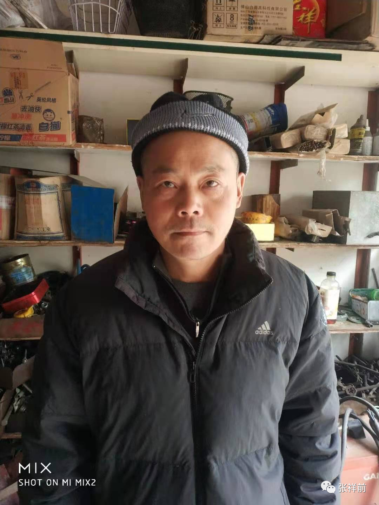 妻子拿了一些零食给娘家人的小孩吃，大家很开心。由于是正月，小孩有压岁钱，40元的零食很快就卖了差不多。妻子又催促我上街去发货。 我精心选择一个最佳时期，小店一开始得到妻子的支持，开头比较顺利，想想刚开修理部时候妻子的剧烈吵闹，我都难以相信开小店是如此顺利。 但是，我也没有想到这个小店使我们摆脱了贫困，是我们以后经济的主要来源，同时也是我们剧烈吵嘴的根源。 小店经营一段时间，收入远远高于修理部，我打算大干，扩大经营。我的电焊修理部的地皮是租的，一年100元，虽然不多，但是，如果扩大经营，就一定要买下来。 为了顺利的买下来地皮，我苦思冥想，我首先关掉了修理部和小店，搬到附近的同大镇，租了房子经营一段时间后，然后叫我岳父去说服房东把地皮卖给我，房东觉得地皮一年100元的租金没有了，地皮闲在那里也没有意义，就以1250元价格卖给了我。 买到了地皮后。我和岳父商量盖房子，准备把小店规模扩大。但是，我们商量的事情被妻子偷听到了，妻子闯进来，厉声质问：“这个地皮是人家，你在上面盖房子，你脑子有问题吧？” “地皮我已经买下来了”我预感到她要发火，只好冷静回答。 “买下来了？为什么不让我知道，啊！”妻子非常气愤的样子。 “这些事情不能够让你知道，”岳父说， “去年，废品站老板有一个切割机，300元，他看阿钱老实，特地留给他的，新的要700元，阿前不敢从你那儿要钱，从我这儿借，你问我阿钱借钱干什么，我就实话实说了，结果，你是追在阿前后面，连声说：你买切割机干什么？是不是切你的头？---你看你，说的都是些什么话。” 第二天，妻子问我买地皮到底花了多少钱。“1250元”我回答。 妻子立即来气，“这个地方白送给人，人家都不要，1250元，哼！，老子要要回来，老子要和他们搞清楚。”妻子转身去了房东家。 我已经领教到了在农村开小店收入很不错，经过半年的谋划，眼看可以达到目标了，看着妻子的怒冲冲的步伐，我想很可能被她搅和黄了。那天恰巧房东不在家，我的小店扩大计划第一步成功了。 盖房子的时候，瓦工都是她娘家门口人，当着娘家人的面，妻子是大吵大闹。 她为什么反对小店扩大？我现在慢慢的明白，其实她就是一种钱一旦到手就死不出来的思想。 她分不清什么叫消费，什么叫投资，投资是有回报的。只要是花钱，她就心疼，就不高兴，就要骂、闹。另外，她喜欢什么事情都要指挥，很多事情自己不懂，又没有能力指挥，常常是瞎指挥，胡乱指挥。没有计划，漫无目的，做事情是随心所欲，计划没有变化快，同时又极端的自私、不负责任、不尊重别人的意见，脾气暴躁，她这些特点，是她喜欢吵嘴的原因。 在妻子的强大干扰下，小店的房屋留下严重的后遗症，以后不得不重新盖，这样建了拆，拆了建，搞了好多次，反而化了许多冤枉钱，每次盖房子都是在妻子剧烈吵闹中开始到结束。 有一次，她骂的太难听，没完没了的骂，她娘家门口的一个瓦工受不了，跑回了家，妻子解释说我骂我家阿前，又不是骂你。 这个瓦工说：“你骂阿前是什么目的？你不想让他翻盖房子，就应该阻止拆房子，现在房子已经拆了，你老是骂，难道就这样乱七八糟的停止了，不搞了？我真不明白你脑子是怎么考虑问题的”。 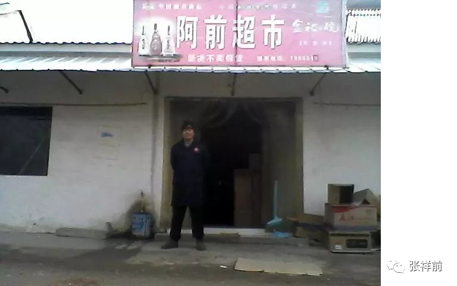 房子盖好了，面积扩大了好几倍，又另外盖了房子专门作为电焊、修自行车的修理部。我又把小店招牌换成超市，生意火爆起来，但是，妻子仍然是剧烈反对，采取了不合作的态度。不过，这个时候，几乎没有人帮她说话了。每到过年的时候，她都要大吵大闹，搞得是惊天动地，砸东西，把家里搞得是一塌糊涂。 有时候，我修东西，手很脏，有顾客来买东西，妻子站在一旁不肯伸手，就像与她无关一样，特别让人生气。 有一次，可能是我最遗憾的一件事情。那是一个晚上，一个人在QQ上问我一年有多少收入，并且说他是大老板，给一笔钱给我，单年利息就可以超过我们的一年的总收入，让我别的事情不要干，安心搞统一场论研究，最后，他要我开视频给他看看我的长相，我开了视频后，他就要我把银行账号报给他。 这个时候，突然门口一个人来买香烟，“阿前，等会儿上网，把香烟拿给我。” 我示意妻子去拿香烟，妻子把脸扭一边不理睬我，这个时候顾客大声说，“快点！怎么搞的？” 我示意女儿去拿香烟给顾客，女儿根本就没有反应，我只好自己去拿香烟给顾客。 这个时候，女儿坐上了电脑桌，对那个大老板说，“我爸爸都是骗人的，我爸爸在现实中失败，到网上来找存在感•••••” 我上前一看，心里一惊，连忙质问女儿，“你怎么说你爸爸是骗子？我小时候遇到外星人的事情你知道吗？我带来的统一场论对整个人类的重要性你知道吗？•••••” 女儿不吱声，但是，脸上毫无亏歉的意思，一脸无所谓的态度。 我再看电脑，那个大老板已经把我QQ拉黑了。 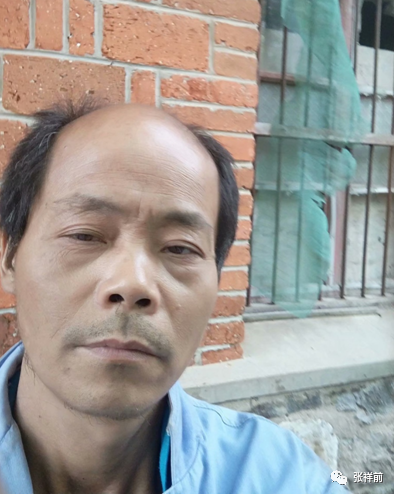 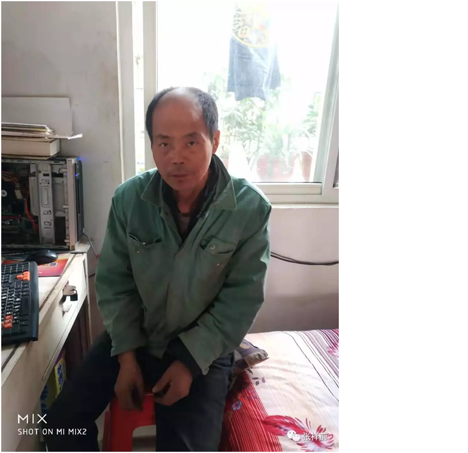 2018年我生肺结核病的时候 第二天，一个网友在QQ上问我， “你是怎么搞的？昨天那个大老板是我的好朋友，他准备给你钱，资助你搞统一场论研究，是我说服他的，让你摆脱养家糊口，专心搞统一场论的研究，可是你的女儿居然说你是骗子，你是怎么搞的？生活困难怎么可以专心搞研究？他准备给你7位数啊，研究的影响有多大了•••••” 以后，果然是经常吵嘴，原因都是为了钱。 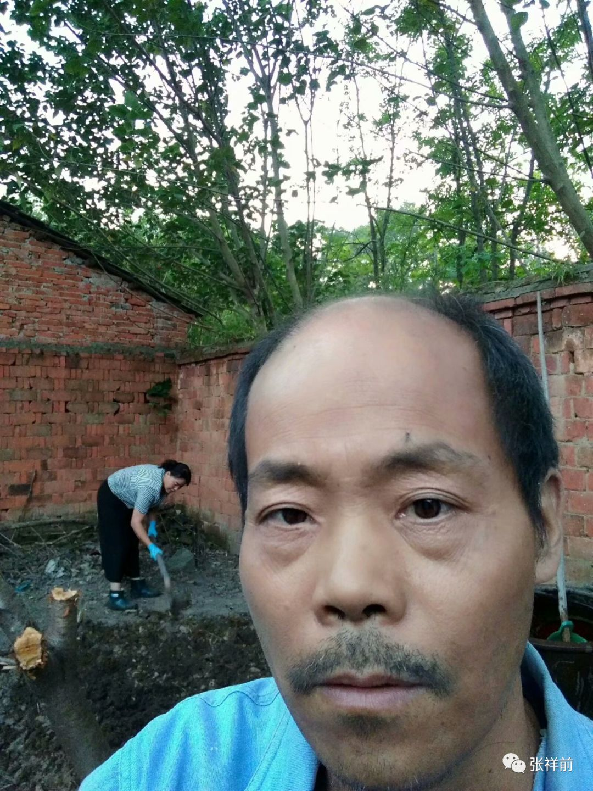 我和我的妻子在老家院子里 四，我的父亲死得很亏 作者张祥前 我的父亲因为胃癌去世了好几年了，我常常思念他，他是一个极度正直善良的人，死的时候被癌症折磨得非常悲惨。 我的父亲身体本来是非常棒的，他的病的起源与国家一项错误的政策有关。 以前，卖猪肉都是食品站独家经营，私人是不允许卖猪肉的。这个政策也不错，农民可以吃到新鲜放心的猪肉。 后来，随着改革开放，市场经济悄然兴起，这个和食品站的垄断是尖锐矛盾。很多私人偷偷的卖起了猪肉，由地下偷偷摸摸的，到明目张胆的公开买。由于私人卖猪肉，价格低，服务态度好，又可以赊账，又是送货上门，很快，食品站是纷纷倒闭。 上世纪90年代，为了挽救倒闭的食品站，国家出台政策，恢复食品站的垄断地位，私人如果卖肉，只有到食品站批发，不允许自己屠宰，这个政策叫做“定点屠宰”。 但是，这个时候市场经济已经有了一定的规模，由于是垄断，食品站把猪肉批发价格定得非常高。私人卖肉的经营户没有主动权，别无选择，失去了利润空间，这些人对“定点屠宰”极为不满，恨之入骨。 地方政府为了把这个政策稳定下来，也是费了很大力气的。 我记得我们这个地方有一个开小百货店的妇女，在店后面偷偷卖肉，被食品站的人发现，食品站的人没收她的猪肉，她和食品站的人打了起来。 食品站的人叫来派出所的人，把她抓进派出所，到了派出所她仍然大骂，第二天，她不知道怎么就死了。派出所的人说她生病死了，后来派出所和食品站赔点钱给她家属，事情就不了了之。 发展到后来，私人经营户从食品站按计划批发一些猪肉，再偷偷的在家里屠宰一些生猪。这些私自屠宰的猪肉由于没有食品站的盘剥，价格低，经营户就是靠这些猪肉赚钱的。 一段时间内，食品站规定一个经营户一个月要完成600----900斤猪肉的计划。这个600----900斤猪肉一把情况下批发价格定的是非常高的，比市场零售价还要高，私人经营户只有靠私自屠宰的猪肉生存，所以，他们也是处境艰难。食品站从一开始不允许私人自己屠宰，到后来，只要私人经营户完成了任务，也就是睁一个眼闭一个眼。 我们附近的肥西县三河镇，是我们这儿最大的集镇。镇上许多卖猪肉的私人经营户，他们大量屠宰生猪，低价销售，造成了农村与集镇猪肉价格差距拉大。 在农村，猪肉是农村人最重要的食品。一般农村人日常生活吃菜就是烧猪肉，加上烧白菜。 我的父亲说：“门口食品站的猪肉太贵，上三河镇买又没有时间。”所以，他经常到镇上一下的买许多猪肉，回来用盐腌，经常是吃很长时间。 我那时候不和他一起生活，我每次回家看到他吃腌肉，都提醒他要经常吃一些新鲜的猪肉，不能够老是吃腌制肉，可惜他不以为然。有时候，我回家看到腌制的猪肉都已经发黄变质了，我的母亲仍然舍不得扔掉。我把这些变质肉扔掉常常找来父亲和母亲的责骂。 当我父亲确诊是胃癌，已经是晚期了，我们一家人回想起来那些发黄的腌肉，一切都已经晚了。 我们附近农村有许多人和我父亲一样患上胃癌，绝大多数因此而丧命。 他们都是日常生活中发黄的腌肉陪伴着一生。 这几年，市场经济横扫中国城乡，由于食品站是集体企业，缺少监管，贪污懒惰，又慢慢的倒闭，被淘汰。农民又可以吃上新鲜的猪肉了，加上冰箱的普及，农民患胃癌的人大幅度的减少。 有人看了我这篇文章，可能认为癌症发生怎么可能和国家政策扯上关系？在英国历史上，曾经对有窗户的人家收税，结果很多人不开窗户，造成英国历史上许多人因为缺少阳光而患上佝偻病。 我的父亲确诊是胃癌，到蚌埠肿瘤医院治疗，被人骗进了放射科，接受了放射治疗，那时候，没有网络，我们查不到资料，不知道放射能不能治疗胃癌。 那时候，一个潜规则是：病人家属要塞几千块给主治医生，那个主治刘医生，想要这个红包，就骗我哥哥和父亲，说他们放射科治疗胃癌比手术好。我们后来才知道放射治愈胃癌的可能性是零，而手术大约有三分之一治愈的可能性性。 父亲生病是因为错误的政策，死于医疗的腐败。 五，我从外星球回来，身体有那些变化？ 作者张祥前 我在1985年夏天去一个高度发达的外星球生活了一个月时间。 有网友问我，从外星球回来后，身体有什么变化吗？ 我从外星球回来后，感觉精力和体力都非常好。感觉是力大无穷，有一次，在一个测力器上，我大吼一声，拉了600多斤。 有一次，我在磅秤上，用手拉着底板，也测量是590多斤。 那时候，感觉自己身体很轻，很高的土墙，很宽的水沟，一跃就过去了。走路很快，从来没有人能够跟上我。现在可能是生病了，感觉自己的身体很沉重。 我刚才从外星球回来不久，就发现了自己后脑勺有一个长条形小坑，很深，食指可以放一半进去。后来，我头上的小坑慢慢愈合，经过37年，现在基本上长平了，留下一些伤疤。 这个是不是外星人植入芯片留下的，或者是其他原因引起的，里面有没有芯片，我一直没有到医院检查，所以，对此不清楚。 我从外星球回来后，当时不是立即就记得外星球所见所闻，只是看自己家房前屋后有一种很陌生的感觉，好像自己去远方生活了很多年后，又回到了老家的那种感觉。 对于外星球的见闻，几乎都是在以后睡梦中慢慢的回忆得来的。有时候回忆得到的内容竟然是自相矛盾的，分不清楚哪些是做梦，哪些是真正的外星球见闻，甚至分不清楚地球上的见闻和外星球的见闻。 到外星球旅行过程的先后顺序不少是乱了，有时候，搞不清楚哪一个在先，哪一个在后。 有网友问我，你到底是身体去的，还是元神【就是思想意识】去的外星球？ 我也是曾经思考过这个问题，在外星球很多经历、感觉，应该是我真实身体去的，我想梦境和真实经历的感觉区别应该是很大的。虽然有些情节记忆模糊，但是，有的细节是刻骨铭心，记得非常的深刻。 刚开始的那几年，在睡梦中，回忆很清晰，能够回忆很多细节。特别是记得他们许多物理和数学方程式，我隐约的知道这些很重要，用一个小本子记下来，可惜后来被我哥哥撕毁了。 现在，37年过去了，他们的科学理论，以及他们的数学和物理方程忘记了不少，可能与年龄也有关系，旅行的经过很多细节都记不得了，或者变得很模糊。 有网友问我，1985年从你外星球回来后，和外星人有没有再联系过？ 从那以后，我和他们就再没有联系了，特别是我现在处境困难，希望他们再一次出现，好给我一个证据【当时去的时候，没有想到留下什么物证，也没有想到留下物证的重要性】我也在暗地里呼唤他们，但是，没有任何效果。 很多网友说我很幸运，能够到外星球旅行，在身体最强壮的时候，能够和外星人发生性爱。 真实情况是，有的外星人身体散发了极度腥臭味，让人呕心，外星人的性器官很多是长长的肉管子，深入到我的体内，尤其是到胃里，有时候引起强烈的烧心和呕吐，到了让人无法忍受的地步。她们的肉管子如果从尿道进去，经常会有难以忍受的痛苦，并且这些恶劣记忆几十年挥之不去。 在一个大桶里，里面有许多外星人，他们把你扔进去，当你身体从高处飞奔外星人身体的时候，感觉不是美妙，而是感觉向一个钢筋林立的钢筋丛落下，或者向一个许多巨大的、缠绕在一起的毒蛇窝落下，有的是极度恐惧、恶心。 还有体力的极度消耗，能够使人达到出现各种幻觉。 我的外星球旅行，还给我带来了巨大的精神痛苦，一种莫名其妙的着急感，几十年时间里，怎么也躲不掉。我现在仍然在疯狂的发帖，向外界宣传外星人科技，不是我有多勤奋，不是我有多伟大抱负、远大理想，而是一种莫名其妙的着急感，像恶魔一样在背后驱使着我，一个声音在时刻命令我：一定要使外星人的科技被社会重视为止。 有网友问，你说你生了糖尿病、肺结核，外星人既然医疗那么发达，为什么没有给你治好病？ 我从外星球回来，已经过去了37年了，外星人他们拥有人工场信息场扫描为人治病，说明他们的人同样生病，他们可以当时为我治病，可我当时没有生病，他们也是无法保证我37多年后仍然不生病。 最近几年，我女儿患精神分裂，我妻子在家疯狂的、没完没了的吵、谩骂，在她巨大的压力下，我经常到工地上、工厂里去干电焊、安装活，超负荷劳动家常便饭。可能是在长期超负荷劳动和精神压力双重打击下，才生病了。还有长期宣传外星人科技的事情，进展极不顺利，心生郁闷，可能也是一部分原因。 有网友问，你是怎么得到了外星人科技的？他们给你上课了吗？ 他们没有给我上课，他们没有学校，他们用人工场扫描技术可以把死记硬背的知识快速的输入到一个人大脑里。 他们也可以快速的从一个大脑里把思想意识信息调出来。 我获得他们的科学技术，可以断定不是他们给我讲课得到的，虽然我们也就他们科学技术交谈过。他们经常用场扫描设备扫描我的大脑。 他们用场扫描把知识输入到我的大脑中，这种可能性很大。也有这种可能，他们用场扫描把一个外星人的部分记忆输入到我的大脑里。 我曾经听到过他们说，“我们给你大脑里的知识，你用到的时候，才可以出现，而且以后就可以形成记忆，在没有用到之前，你是不会知道的，这么做的目的是保护你的大脑，如果把我们输入到你大脑中所有的知识，在你大脑中突然集中出现，可能会严重损坏你的大脑，使你精神失常。” 这么多年来，我只是精神长期极度痛苦，但是，没有疯掉，为什么我女儿精神分裂，与这个有关吗？ 有网友说我这些知识都是学习来的。 这个首先要存在一个条件，我们地球上要有这些知识，我才可以学习。 百度 张祥前，可以搜到我写了大量关于统一场论、宇宙核心秘密之类的文章，特别是时间、空间、场、电荷、质量、能量、光速、万有引力场、电磁场·····的本质问题，全世界独一无二的的，怎么会是学习得来的，本来没有的知识，我该是向谁学习得来的？ 六，你为什么不写一本真实的外星球旅行回忆录 作者张祥前 本人在1985年夏天【我1967年出生，那时候我19岁，人生最为强壮的时候】去一个高度发达的外星球旅行了一个月时间。 由于受到强烈震撼和刺激，我回来后就拼命的向有关单位反映，可惜没有人理睬。由于长期写信，钢笔使右手的中指都变形了。期间还发明一种容易书写的新型钢笔，还并且申请了新型钢笔的专利。 互联网传到农村，我又在网上宣传，很遗憾，37年过去了，仍然没有得到社会的重视。 很多网友对我说：张祥前，你为什么不写一个外星球旅行回忆录？万一引起轰动，更多的人关注你，你的外星人科技才有可能被社会重视。 其实，我早就有这个想法。但是，出师不利。我很早就写出了一部分。 前几年，我写了《果克星球奇遇》，有时候名字又叫《安徽农民外星球一个月见闻》，讲述自己在外星球的一个月的旅行经历。可惜，很难发到网上和读者见面。 即使发上去，不久就被删除。期间我也接到有关单位的警告电话，要求我写这篇文章以科幻小说来写，不得以真实事件的报告形式来写，以免引起公众不必要的恐慌。 我只好反复的修改，使文章看起来像科幻小说，先后持续了几年时间，后来改得是面目全非，才勉强发到网上，不过，现在网上又搜不到了，几乎都被删除了。 当时只要有网友想看我的外星球一个月见闻，我发给他们看，当时都是免费的，也没有想起来要收费。也在不少网站上发布了。 但是，没有想到，就在免费的情况下，居然有人举报了我，使公安处理了我，警察上门时候，我岳母吓得哭起来。我妻子更是激烈的指责我，痛骂我不应该在网上写这些乱七八糟的东西。 公安上门查了我的电脑，他们还查了我手机，由于担心公安再次上门搜查，我后来把U盘数据给删了。 虽然我沉寂了一段时间，但是，我仍然是不死心的，一直想把自己在外星球一个月经历写出来，发到网上。 最近几年微信流行，很多微信好友叫我讲一讲在外星球上一个月见闻，我就把《果克星球奇遇》在微信上发给好友看。 有网友问我，《果克星球奇遇》里面有多少是真实的？我回答里面大约一半是真实的。很多网友对此不满意，问：张祥前，你为什么不写一本真实的外星球旅行回忆录？ 主要原因一个是记忆模糊，真实的回忆录涉及大量的性爱实验，发在网上就被删除，无法和读者见面。我们的社会显然不能容忍这个。就是在微信上传播，也被微信认定为违规，导致我的微信多次被封。 另外，我在外星球，他们的性爱实验，对我也造成了侮辱和虐待，我从内心来讲，是不想把这些讲出来，我只是希望大家关注我带来的外星人科技信息，因为这个对人类有巨大的用处。 但是，在多年宣传外星人科技过程中，我发现大家只是特别对外星人性方面感兴趣，对外星人科技几乎没有人感兴趣。有时候，为了引起大家的关注，只好说一说外星人与性有关的事情。 我19岁时候去外星球旅行，记忆可能被外星人干扰，记得的不是很清晰，获得的记忆是片段的，而且经历的时间先后的顺序被打乱，不知道那些事情是先发生的，那些事情是后发生的。这样引起记忆的混乱，使有些事情说不清楚。 不像我们地球上旅行， 可以从头到尾，一步一步叙述。 另外，外星人他们的社会高度虚拟化，使你无法记得那些是虚拟部分，那些是真实生活部分。他们通过一种截频技术，使人睡在床上，感觉自己在旅行、和别人互动，和真实的旅行、互动几乎没有任何区别。 他们出门旅行，通过他们的全球运动网，是从家里直接到达目的地，而且无论远近，都是秒到。不是像我们从大门出去，坐汽车或者做高铁、飞机。 另外，他们有许多不同的时空区域，有的地方时间过得快，有的地方时间过得慢。 他们几个人聚在一起，通过一种技术，你可以让其中某几个人看到你，让另一些人看不到你。 他们的世界是一个高度虚拟化，给人很梦幻、诡异的感觉，他们的星球也是一个极度淫荡的星球，主要原因他们的人不讲道德，不以德道来约束人，就是法律管的范围也是很小。他们的很多行为，放在我们地球上不光是匪夷所思，也是完全不能接受的。 我估计他们带走我可能有两个目的，一个是研究我的前世遗留在空间中的信息，另一个是可以获取我身体信息和身体运动信息。 本人遇到外星人事情在网上公布后，受到社会上很多人关注，上海宝山电视台曾经采访了我，但是，很遗憾节目审查没有通过，所以节目没有在电视上播出。 《果克星球奇遇》虽然不完全是真实的，但是在介绍外星人生活方面，披露出许多以前人们毫不知情的细节，在目前社会主流勉强能够容忍的范围内，可以满足一下大众对真实的外星球、外星人日常生活的好奇心，同时也可以给广大科研工作者一个启示和参考。 有网友最近私信我，希望看到《果克星球奇遇》电子版，对我提出要收费，有的网友很不高兴，严厉指责我。 我最近患肺结核和糖尿病，不能抡大锤，很多电焊干不了，收人锐减，我以前主要是靠电焊为生活，申请低保又失败。现在想以写文章为生活，希望网友谅解。 前一段时间我们这发洪水，我们忙着搬家，又忙着搬回了。等有时间，我仍然想写真实版的我在外星球一个月旅行见闻。 很长一段时间，我不想写的原因是无法发到网上，想通过微信文件助手发给想看的网友，又导致微信经常被封。 最近，我发现通过我的邮箱zzqq2100@163.com发给网友，比较安全，所以，又萌动了写真实版的念头。 七，我是通过什么方式获得了外星人科技的？ 有网友问我，外星人是通过什么方式把他们的科学技术传授给你的? 他们有一种人工场扫描可以，可以用场这种无形物质向人大脑内部输送知识等信息，也可以扫描一个人大脑，从中调出这个人的思想意识信息。 我被他们带到他们星球上，做了大量的实验，很多实验中，他们用仪器在我大脑附近扫描。 有时候，我在一边接受扫描的时候，一边还接到他们指令，指使我怎么去思考、回忆。 我猜测我获得了他们的科学技术，很大的可能性就是他们用人工场扫描技术，把他们的知识扫描到我的大脑中。不会是通过语言交流的方式获得的。在短短的一个月时间里，是不可能通过言语交流的方式，获得、掌握、消化那么多科学技术信息。 我曾经听他们说，他们输送到我大脑中的知识，只有我在用的时候，才会突然使我想起来。平时，无缘无故的我是想不起来这些知识的。 如果这些知识突然一下地在我的脑海中出现，可能引起我的大脑损伤，造成精神分裂之类的症状。 我在几十年时间里，精神莫名其妙的紧张、痛苦，是不是与这个有关，我一直没有出现精神分裂症状，但是，我女儿却患精神分裂，难道与这个有关系？ 也有可能是，他们把一个外星人的部分记忆输入到我的大脑中，我拥有了一个外星人的部分记忆和知识。 他们也和我语言交流过，我对他们的身体、性、两性关系之类感兴趣，我向他们询问这方面的知识，他们要么不理睬，要么回答得很少，敷衍我。 他们努力的向我讲解他们关于宇宙方面的知识，他们反复多次的提到： 宇宙是由物体和空间构成的，不存在第三种与之并存的东西，其余都是我们观察者对物体运动和空间运动的描述。 他们反复的向我灌输这一点，强调这个是宇宙最核心的秘密，只有高度文明、高度发达的星球上的人才能够掌握这个，想必这个原理是极为重要的。 从字面上来分析，这个原理如果是正确的，我们地球上的暗物质、暗能量、弦论、上帝粒子、标准模型这些都是根本错误的，没有丝毫作用。 从这个原理出发，还使我们认识到时间、场、质量、电荷、光速、动量、力、能量----这些都是物体在空间中、或者物体周围空间相对于我们运动形成的，是一种运动效应，而且空间本身时刻也是在运动。 很多网友评论说：“你写的外星球旅行回忆录、外星人科学理论给人有眼前一亮的感觉，也有逻辑混乱、乱七八糟的感觉。” 我想这个原因一个是我初中水平，很多外星人科学理论没有能力讲清楚。 还有一个原因是我获得的外星人科技这种方式很特殊，现在我无法分清楚那些是我通过与外星人交流获得的，哪些是他们用场扫描输送到我的大脑中，哪些我拥有一个外星人的记忆，哪些是通过获取空间中的信息得来的。 至于我写的外星球旅行见闻《果克星球奇遇》，有网友问是不是真实的，我说只能说一半算是真实的，这个原因是我的记忆模糊，分不清楚哪些经历是先，哪些经历是后，我想这个有可能是我的记忆被外星人干扰。 有报道说，外星人可以干扰、修改与外星人接触的地球人的记忆，让他们把记的事情的顺序打乱，或者把记忆修改后，显得事情非常荒唐，使外星接触着向人描述这些事情的时候，遭到别人的耻笑和怀疑。 我也遭到同样的经历，有些事情，不敢说出来，害怕因为荒唐而被人耻笑。 还有，外星人绑架地球人，做出许多性爱实验活动，其实，他们是在收集这种活动数字，但是，这个过程由于难以启齿，不好向人描述。 还有，我们的社会习惯，对外星人这些事情，难以容忍。 我当时写《果克星球奇遇》 时候，反复多次，都无法发到网上，期间我还接到警告电话，只好反复修改，修改得像科幻小说，才勉强发到网上，现在基本上又都被删除了。 有网友对我说，“你当初如果只是写物理方面的，科技方面的，不提外星人的事情，可能今天情况要好一些，获得帮助的人可能多一些，你提外星人，让人反感，反而对你宣传超前科技不利。” 当初我从外星球回来后，就积极宣传遇到外星人的事情，对人说起遇到外星人的事情可能遭到别人的反感，当时没有想太多，也没有料到现在会在网上遭到严厉的封杀。 我在这里要纠正一下，我到有关单位去宣传外星人科技，还没有提到外星人的事情，他们就叫我滚出去，可能当时我的衣服穿的不怎么样。不是我提到外星人，让人觉得是天方夜谭。 八，我在合肥做外卖 我本来在农村老家开小店、搞电焊、修理自行车，被拆迁后，搬到了附近同大镇继续开小店、搞电焊、修理自行车，哪知道这里是新开发的鬼城，大街上没有几个行人，生意很差。 我女儿和女婿在合肥做小吃和外卖，后来我的妻子跑到合法，和女儿、女婿在合肥加盟了良记卷饼王，叫我去合肥，给他们帮忙。 他们其中一个店在北一环，另一个店在合肥明教寺附近的步行街上。 步行街上所谓的店，只是上面一个挡雨的棚子，四周没有墙壁，从上面通一根电线下来，就是这么简单的1. 5米乘0. 8米的地方，每月租金人民币1万元，电费是1. 6元1度，水费也不少，大伙公摊。房东不知道是谁，感觉属于是高深莫测人士吧。 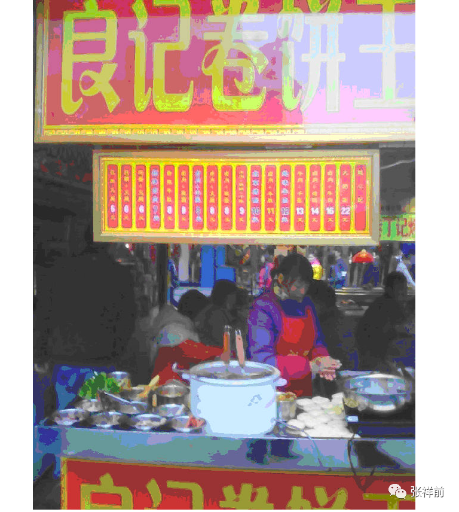 每天晚上妻子他们都要把做小吃的设备带回10几里路远的租住房，早上又要带来，非常的麻烦，妻子打了很多次电话，叫我到合肥帮他们焊一个柜子能把东西锁起来，这样就不要把东西来回带。 我严重晕车不想到合肥去，在步行街上人多，只有到夜晚1点种，隔壁收摊了才可以干电焊活，所以找不到电焊工，我只好带一个电焊机硬着头皮去了。 妻子他们上午9点出摊，到晚上12点收摊，回到租住房，还要煮饭洗衣服，往往都是夜里1点才睡觉，非常的辛苦。 妻子多次要求我把同大的电焊部关掉，去和他们一起做卷饼，店面和外卖同时做。我一个怕熬夜，另外深知妻子和女儿她们太凶悍，以后一遇到窝囊事情，肯定拿我出气，所以我一直没有同意。 妻子他们做卷饼手法非常的快，简直是让人目瞪口呆，擀面，放菜，卷饼，包装，一气呵成，动作是让人眼花缭乱。由于摊位租金太贵了，卷饼只有几块钱一个，只有手快才能够生存下来。 有时候不光店面来许多人，外卖骑手又来催，让人产生巨大心理压力。 我去了几天，就有2个搞小吃的摊主因为亏本不干了。有的摊主营额都不够摊位租金，整天是唉声叹气。 和一个摊主交谈，我问，“这里租金为什么这么贵？房东是谁？” 摊主先是大骂房东心黑，后来又为房东开脱，“房东是一个郑州人，我们这所有的人都骂房东心黑，但你也要想一想，房东拿下这个地段，开发这些摊位，要塞多少钱给那些神秘人物，恐怕也是天文数字啊。神秘人物才是食物链的顶端啊！” 有一个人卖臭豆腐，用强力鼓风机使劲的把臭味往大街上吹，用液晶电视机反复播放电视台采访他们的节目，非常吵人，但是他们生意很好，好的时候一天可以赚一万多元，创造神话。但是，创造神话的只是极少数，大部分摊主都是在亏本。 所以，这些摊位频繁的换主人。有摊主说，死人没有抬出去，活人又往里挤。 有一个芜湖夫妻俩，一个月1. 2万元租下一个1平方米摊位，租金付了一年，卖什么台湾仙草，什么生意也没有，两个人经常默不作声的坐着发呆，像是在思考人生。 有人卖烤猪蹄，生意火爆，后来冷冷清清的，我问是怎么一回事，一个女孩说，开始大家好奇，买猪蹄啃一啃，现在都知道是那个味道了，就没有兴趣了，哪个人能够天天啃猪蹄啊？胃受不了啊。 有三个小伙子烤鱿鱼，把音乐开得非常大。店面很小，只能够容纳一人在里面，里面烤鱿鱼的是一个小伙子，烤鱿鱼的动作像跳激烈的舞蹈，引来许多女孩用手机拍照。 过一会儿另一个人替换上场，被替换下来的小伙子呆坐在对面墙根下，累得像狂奔的狗一样大喘气，别人招呼他，他不作声，用手比划一下。再问他，他就不理睬你，像木头人一样不说话了。 有一次我从同大镇开着电动三轮车到合肥步行街，路上亲戚给了我很多草莓，我妻子拿很多给了邻居卖武汉牛蛙的姐妹俩，那时候草莓很贵，我责怪妻子太大方。不过后来，这姐妹俩也给很多烤牛蛙给我们吃，出乎我的意料。 我每次去，卖臭豆腐阿姨都端来许多臭豆腐给我吃，看来，我妻子平时可能没有少给卷饼给他们吃。步行街这些小吃摊主关系都不错，大家相互分享各自的美食。很多经营者在这儿做生意都是亏本，对步行街唯一的好印象就是这一点。 有一次步行街上有许多人排队买东西，妻子她们叫我也去排队买，可是人太多了，我折了回来，妻子她们不死心，叫一个傻子去买，傻子大吵大闹的把东西买来，我们拿到手一看，大失所望，原来是什么手撕面包，做活动打折销售。 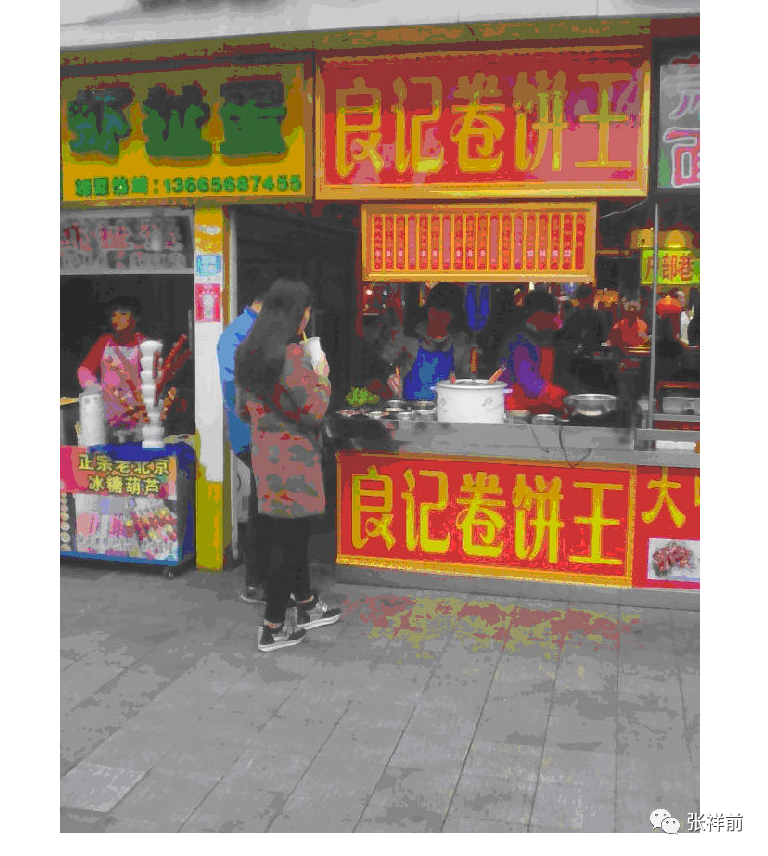 夜晚12点一过，一个铁栅栏打开，突然有许多人穿着大棉袄，骑着电动三轮车，快速的驶入步行街，场面壮观，就像电影中战斗场面。问人才知道这些人是夜市摆摊的，允许摆摊到早上5点种。 这些人动作非常快，三轮车一停，摊主打开后面的箱子，变成了货架，一眨眼功夫，像玩魔术一样，摊位就摆好了。 这里来乞讨的人收入很高，一个小时可能有百元的收入，可是管理很严格，被特勤发现，人立马就被袈了出去。 有小吃摊主把东西放在路边，特勤看见了，先是一声警告，如果再不搬走，东西马上就被没收，没有商量的余地。 后来，可能受经济不景气的影响，妻子和女儿她们在合肥北一环和淮河路步行街两个店都在亏本，为了减少开支，我只好回到同大镇继续开修理部，偶尔去合肥帮她们。 女婿去银行上班，晚上下班后去帮忙。女儿一个人照看北一环店，妻子一个人照看步行街店。 有一次，妻子打电话说她们的电动三轮车的电瓶被小偷偷去了，由于没有焊接防盗装置，今年已经被偷了4次，她晕车又太厉害，只好每天从住处步行到20多里外淮河路，夜里12点要步行赶回临泉路领域花园的住处，非常辛苦，实在受不了。 合肥的小偷太多，已经严重的影响了老百姓的日常生活，淮河路步行街上的做小吃的人说他们个个都被小偷偷过电动车和电瓶。 我晕车厉害，只好开着电动三轮车，用了接近3个小时从庐江县同大镇开到了合肥。 可是到了合肥，妻子她们的电动三轮车再一次被小偷偷去了，我送来的电瓶没有派上用场。妻子她们每天要求用我的电动三轮车接送她们，我想回到同大镇继续干电焊，妻子她们死活不同意。 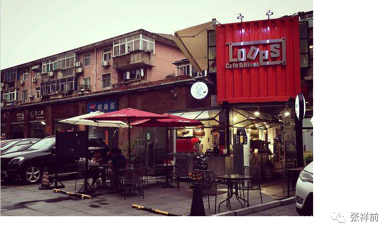 可是她们小吃摊现在每天的营业额都没有房租多，她们现在等于都是赔钱在为房东白白干活。妻子每天到夜晚12点收摊，回去后煮饭、洗刷后，要到1点才可以睡觉。做这种生意简直是活受罪。 我劝她们把这2个小吃摊关了，干别的事情，可是她们说房租已经交了，退不回来的。就是现在转租给别人，也是很难转掉的。 我说，等房子到期了，你们干别的事情吧，或者干别的生意，或者上班。 妻子她们没有明确表态，但是，妻子说，无论到了什么山穷水尽的地步，都不会跟我回同大农村生活。 我很难理解她们，她们每天非常的辛苦，还赔钱，每天的生活就是在摊位上做卷饼，路上躲让汹涌的车流，没有一点业余时间玩，每天面对污浊的空气和刺耳的噪音，这样生活在大城市有什么意思？ 有一次，女儿说想吃包子，包子店就在北一环路对面，可是，面对潮水般的车流，买个包子都有很艰难的感觉。大城市生活其实很别扭。 这一次合肥给我留下不好的印象，许多人热情的过来和我打招呼，步行街摊主们对我说，这些都是骗子。 我看到了步行街有很小的男孩强行把花送到一对年轻男女手中，然后要几十块钱。一个小伙随手给了10块钱，这个送花男孩说钱不够，拽着这对年轻男女的衣服就是不松手，这么点大的小孩就学会了敲诈，人品如此恶劣，这个社会怎么了？ 在蒙城路和北一环交叉口，我看到一个人浑身缠着白布，直挺挺的躺着，边上一个女人在嚎啕大哭，说他男人死了，没有钱安葬，希望好心人捐款给他们。 我看了有点吃惊，可是妻子和女儿不屑一顾的说是假的，他们是演戏骗钱的，在合肥别的地方，干了很多次了，她们见怪不怪了。 我在合肥呆了一段时间，劝妻子把卷饼做大一点，价格卖低一点，增加一些花样，把卷饼味道做好一点，希望可以把生意改善一点，可是妻子她们根本就不理睬我，反而联合起来攻击我，说我没有本事，不会挣钱，害得她们吃苦。 后来，我不顾妻子她们激烈反对，强行回到了同大镇。 很难理解妻子她们的心态，她们好像有一种不认输、不服一口气的心里在支配着自己。可是一个家庭所有的人都不挣钱，以后怎么生活？ 我走以后，妻子在步行街的店和女儿在北一环店都因为亏损严重，无奈先后关门，打电话叫我去搬家。 有一次，搬家到深夜，人累得精疲力竭。许多做小吃的设备在市中心送给人都送不掉，房东说，和人签了合同，你们无论任何要在天亮之前把东西搬完。 我们眼巴巴的希望收破烂出现，8万多元买来的设备，准备一分钱不要送给收破烂的，可是，在市中心，看不到带大一点车子的收破烂的，我们只好咬牙自己搬。 我和女婿把做小吃的设备送到一个小区的竹林里，在保安的眼皮子底下把许多设备隐藏起来。有一次保安走过来，眼看要露馅，我故意拉着保安，对保安说，“我问你一个事情，你看那个地方·····”把保安引开。 后来我慢慢的用电动三轮车一车一车的把设备运回庐江县郭河镇农村老家。整个搬家过程把人累得像做恶梦一样。 可是女儿和妻子她们仍然不死心，仍然想干小吃和外卖，2017年，她们瞒着我在合肥东二环路边开粥店，在她们的严厉命令下，我只好从庐江县郭河镇农村老家把做食品的设备用电动三轮车望合肥东二环运去。来回十几趟，大约持续一个月，才把设备、生活用品等运完，里面的水电、货架等安装好。 东二环的粥店由于很少有顾客上门，只能网上卖，只能单纯做外卖。 由于竞争太激烈，她们是每天24小时营业，经常是熬夜和高强度、快节奏的劳动。 我问她们，“为什么要24小时不停的营业？夜里休息几个小时不行吗？” 她们回答说，“白天加晚上赚的钱保房租和电费水费等其他开支，夜里赚点钱才是真的赚钱了。” 外卖这种网上销售，要求做餐速度快，一旦接到单子，几分钟就要做好，有时候在吃饭时间段，单子一个接一个，美团和饿了么送餐员使劲的催促，这样导致人的精神高度紧张。 前几天她们打电话给我，说要冲单子，就是大幅度的亏本销售一段时间，扩大影响，为以后争取更多的定单量，这个是做外卖生意不好的时候或者刚开业的时候常用的手段。 由于亏本销售做活动，订单量大增，她们忙不过来，叫我过去帮忙。 我从庐江同大镇骑着电动三轮车赶到合肥，去了女儿她们的粥店，就立即帮她们干活。 我们干白天和上半夜，我女婿干下半夜。我晚上经常是人一躺下，妻子就大喊：来单子啦，搞得人不能睡觉，整天打哈欠。白天我开电动三轮车去市场拿货，经常开着车子打瞌睡，我很害怕，只好蒙眼一会儿，就强行的命令自己睁开眼。 晚上，妻子说和女儿在一起开店很不开心，女人像训斥小孩子那样训斥她，日子非常难熬，干到年就不想干了，女儿经常辱骂她，前几天还打她，妻子把身上的淤青捋给我看，我听了心情很沉重。 第二天晚上，我对女儿说，“你为什么骂你妈妈，还打你妈妈？你妈妈干到年底就不想干了，可是，我们一走，你这个店怎么办？” 女儿听了我的话，很意外的发火，丝毫不检讨自己的行为，反而怪她妈妈和我不好，叫我立即滚回同大镇去。我说，“现在已经天黑了，冬天晚上很冷，我骑着电动三轮车人怎么受得了？” “你到底走还是不走？”女儿抄起了家伙，在木地板上使劲的砸，看样子要动手，我只好开着三轮车走开，后被妻子追上，妻子说，“晚上天太冷，女儿又堵在楼梯边，我不敢拿衣服给你。”妻子叫我呆在马路上不要走，等我女婿回来。 过了两个多小时，女婿回来，把我叫了回去。 晚上，妻子嚎啕大哭，几乎哭了一夜，坚决要回同大老家。 第二天，我和妻子搬东西，准备回同大镇，女婿苦苦哀求， “这个店一般情况下要3个人，2个人就很忙的，你们一走，她【指我女儿】一个人干不了，只能关门，前期我们都是在冲单子，打基础，现在刚刚单量上去了，眼看可以赚钱了，你们不干，一切辛苦努力岂不都是白费？另外这个店投资又这么大，我们真的亏不起啊•••••” 女婿在一家银行上班，面临房贷的巨大压力，他不敢辞职去搞外卖，因为外卖生意很不稳定。 妻子说，“可是，我呆在这儿一天，比过一年都难熬，她动不动就骂我，她这个是在虐待我啊。” 我说，“我们内心也是很矛盾纠结啊，不帮你们看店，眼看店只能关门，这个损失实在是负担不起，可是留下来，日子实在是难熬。她还动不动的叫我滚回去，上一次还动手打了我。这个真的叫我们左右为难啊，就是再聪明的人，也是没办法啊。” 女儿曾经患有精神分裂，由于害怕粥店关门会使她受到精 神刺激，最后，我们是在极度矛盾纠结的心情下留下来了。 上一次，我从庐江同大镇开着电动三轮车赶到了合肥，女儿也不知道是什么原因对我恶言恶语的，叫我滚回家，我说电瓶三轮车正在充电，充电完了，就走，女儿说，不行，你现在就得走，我没有答应，她突然用拳头击打我的头，还用手把我脸抓破了。 我坐在那里，心情极度沮丧，被女儿多次击打居然没有反应，直到她举起一个很大茶杯，我才被惊醒而让开，没有办法，我只好开着电瓶三轮车到亲戚家躲开了，出门的时候，我听到了妻子仍然在喊女儿接单子。可怜的妻子，她可能没有意识到女儿犯病了。 女儿是病人，在房贷的压力下，我妻子和女婿包括我女儿在内，已经顾不了那么多了，一心想的是挣钱。 2015年，在合肥打工的女儿患上了精神分裂，后积极治疗病好了。这几年，女儿在合肥找了男朋友，去年他们结婚了，女儿不听我们劝阻强烈要求在合肥买房子，最终他们按揭买了房子，可是女儿整天念叨每个月4、5千元的房贷。 第二年他们生了一个宝宝，生宝宝的时候，女儿病复发了，惊天动地的在家闹，搅的天翻地覆的，鸡犬不宁，给家里人带来巨大痛苦和恐惧。 后来我们把女儿送到了合肥四院，住进了封闭病房，医院不允许家人探视，我的妻子想看女儿一面，可是护士死活不同意，我的妻子一下地人就瘫倒了，一度哭昏厥了。 女儿男朋友本来是做小吃生意的，我妻子极力主张我们一家人去合肥做小吃，可是这种生意不好做，我妻子和我女儿、女婿他们这几年是屡战屡败，女婿现在已经去一家银行上班去了。 在合肥北一环，合肥步行街他们开的店都失败了，开店时候，要我去用电动三轮车搬东西，失败关门的时候，要我去用电动三轮车搬家，来来回回搞死人。 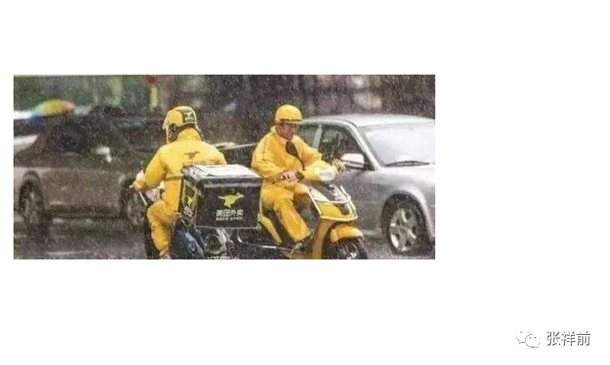 女儿漂亮、聪明，好强，一定要在合肥大城市里混一个样子，可是现在居然是这样的结果。大城市的生活节奏快、压力大，生活在大城市的很多人其实并不幸福。人没有必要强迫做自己做不到的事情，这是我的忠告。没有经济基础的普通人在大城市买房子要被活活拖死。 她现在的暴脾气也可能是精分后遗症，有可能她本来就是这种性格，我们也是搞不清楚。我小时候，父亲对我太严厉，我想对孩子宽容好一点，所以，没有打过女儿一巴掌，可能把她娇生惯养形成了公主病，一种任性刁蛮的性格。 我在同大镇呆没有多长时间，女儿从合肥打电话给我，哭着说手机被人偷走了，妻子又打电话给我说，女儿手机被偷，浑身颤抖冒冷汗，我感到不妙，因为女儿以前患有精神分裂，我害怕她受刺激而复发。 我立即从庐江同大镇开着电动三轮车赶到了合肥，看到女儿明显不对劲，对我恶言恶语的，昨天我躺在楼上的床上睡觉，女儿进屋叫我滚回家，我说电瓶三轮车正在充电，充电完了，就走，女儿说，不行，你现在就得走，我没有答应，她突然用拳头击打我的头，还用手把我脸抓破了。 我们这几年是时时刻刻担心女儿病复发，害怕女儿的病复发。女儿经常无缘无故找茬和我们吵嘴。她妈妈受了气就拿我出气，经常无缘无故的辱骂我。有一次太忙，到中午我们都没有吃东西，我觉得太饿，看到大锅剩粥，想吃一点垫一下，可是我妻子说我吃相难看，竟然用脏水泼到大锅里。 有一次，女儿她妈妈打电话给我女婿，我女儿不让她妈妈打电话，就去夺她妈妈的手机，她妈妈死死不放手，女儿竟然把她妈妈的手机用嘴咬烂。 她气得用巴掌打女儿，女儿竟然抄起一个很大的铁瓢砸她妈妈的头，幸亏被她妈妈躲开。我看了腿都发抖。 看来，我们必须要离开女儿的粥店了，再呆下去，要出人命了。 我妻子打电话叫来她内侄，开车把她接到亲戚家去了。 我晕车太厉害，另外我是开着电动三轮车来合肥的，我只好开着电动三轮车离开了女儿的粥店。 离开的时候，女儿又可怜巴巴的说，“爸爸，你和妈妈真的要走啊？你们一走，这个店我一个人干不了，怎么办啊？” 我眼泪瞬间涌出来，“女儿啊，我们来这里的目的就是帮忙的，可是你频繁的吵嘴，还动手打人，你叫我们怎么呆得下去啊？” 我骑着电动三轮车到了包河大道，天就黑了，由于我的三轮车没有雨蓬，漫天的暴风雪，使我浑身湿透了，整个人都冻得缩成一团，手都冻木了。临走的时候，幸亏我的内侄买一个自行车雨衣给我，挡住了胸口一块，没有被雨雪打湿。 到了肥西木兰小道，迎面来的汽车驶过，两眼一抹黑，什么都看不见，我的三轮车没有灯，因害怕三轮车掉到沟里，我是心惊胆战，只能慢慢的开着电动三轮车。 晚上八点多，我回到同大镇。 我们走后不久，女儿东二环粥店只好关门，我女婿用一个大货车把粥店的设备运到了我的郭河镇农村老家，我们的外卖、小吃梦彻底结束了。 我觉得是一种解脱，可是妻子有可能喜欢干这一行，有可能是不服输，对这个事情念念不忘。去年腊月，妻子去合肥她亲戚家粥店外卖帮忙一段时间，她合肥几个亲戚都在做外卖。 妻子回来后埋怨我说，说她合肥亲戚做外卖一年赚50万，怪我不能和她们一起精心尽力的干。 我说，“我从来就不想干外卖这一行。外卖赚钱的只是少数人，人们一打开手机，几千家外卖，大家只是看手机上推荐的第一页的8、9家外卖，有几个人愿意往手机后面翻?加上做外卖没有门槛，所以外卖的竞争更加残酷。 你家那个亲戚，打开手机总是在第一位，他们全家5、6个人，配合默契，从来不吵嘴，24个小时不休息，从来不关门，春节照常干，动不动做活动亏本销售一段时间，他们也是拼命干出来的，赚的也是辛苦钱。” 后来，妻子说她亲戚家的媳妇由于长期面临巨大压力，也患上了精神分裂，刚刚住进了四院。 以前和我们隔壁做悟空炒饭外卖家的媳妇，点猛火灶时候，老是点不着，煤气出来多了，后来点着了，就嘭的一声爆炸了，当场把炒饭家媳妇脸和胸口烧伤，当天去医院就化去几万块。 有一次，妻子和女儿在店里，猛火灶回火，把煤气管子都烧着了，我吓得腿都发软。 九，2018年我患了肺结核 2018年，有一段时间我老是咳嗽，到同大镇医院去掉水，马上就缓解，可是一干活就累，有一天累得路都走不动。有一次咳嗽咳出血来，我很担心，一度怀疑是肺癌，我以前打过卡介苗，猜测不会是肺结核，虽然肺结核也咳血。 我想到医院检查，害怕检验报告上出现“肺癌”两个字，所以，总是不敢到医院检查。 但是，有一次夜里我剧烈的高烧，妻子摸了摸我的身体，说不对劲。第二天，我把所有电焊活推辞，去同大医院接受检查。 医生叫我留下，别人都走了，我预感到不好。医生指着X片，说是严重肺结核，要到庐江去治疗。 我在庐江人民医院住了14天，出院后，医生还开了许多药，要我回家吃。 呆在医院里面14天，感觉像几年时间，很着急的。 医生问我干什么工作，我说是干电焊的。 医生说，电焊有毒烟，伤肺，你回去后，不能再搞电焊了。可是，不干电焊，以后生活来源怎么办，现在什么生意都不好做，改行重新开始非常艰难，失败的是大多数。 从医院回来的路上，我心情又沉重起来了。 我的哥哥也得了肺结核，而且经常犯，犯病的时候大口吐血，非常吓人，拖了几十年时间。 我被哥哥的结核病吓到了，我打了两次卡介苗，没有想到，我在刚刚50岁出头，也感染了肺结核。 我问主治医师，“我打过两次卡介苗，为什么还得肺结核？” “卡介苗不能预防肺结核，只能预防脑结核。”医生轻描淡写的说， “你的肺结核可能是你血糖高引起的，人血糖高，免疫力下降，容易感染肺结核，你最近血糖高，你自己没有感觉？” “我没有感觉，我生活中很注意饮食，不乱吃东西，不吸烟，不喝酒，为什么血糖高，不能理解。”我说。 “你小时候挨饿吗？” “是的，小时候经常挨饿的，那时候，虽然大饥荒过去了，但是，粮食仍然不够吃。” “可能是你小时候经常挨饿，导致基因改变。”医生说完去照顾别的病人去了。 我从医院回家，现在每天吃很多药，有抗结核的，降血糖的，有保肝的【防止抗结核药物伤肝】，有辅助治疗的。 农民生病是没有保障的，现在我电焊活不能做，挣不到钱了，每天吃药还要花钱，经常受妻子恶言恶语的，只能忍着，以前能够挣钱的时候还可以和她顶几句。 感觉人类的科技仍然很落后，本人研究的统一场论预言了人工信息场可以快速、彻底的治疗高血压、高血糖、癌症、各种传染病，可以使人类进入无药物时代，可惜中国讲究身份，由于我是农民出身，所以这些重大科学发现得不到重视，真是一件遗憾的事情。 十，昨天梦中清晰的再现在家遇到外星人场景 我在1985年初夏，我19岁时候在家中睡觉的时候，被外星人带走，踏上外星球旅行了一个月时间。但是，在我们地球上，只是一夜的时间，他们的时间和我们不一样。我在他们星球上，感觉也有一个月时间。 昨天夜里，我在梦中清晰的再现了1985年那一次【最后一次，以后和外星人没有联系了】，在家睡觉时候遇到外星人的场景。 今天上午我立即打开电脑把梦中的场景描述下来。我的习惯是下午写一篇公众号文章。 我19岁【1985年】那年的初夏，天气不是很热，还没有安蚊帐。我一个人睡在我老家前排房屋的第二间从【从西边算起】，我的父母亲睡在第一间房屋里【从西边算起】。 这排房子一共是5间，中间是大门，两边房子都有窗户，大门左右相邻的两间房子没有窗户，我睡在大门靠西边的一间房子里，没有窗户，而且和大门所在堂屋之间没有隔墙。 特别是，在昨天梦中清晰的浮现了我睡觉的那间房子靠北边有一个灶台，我睡在这间房子靠南边的墙边。 我以前在文章中描述的房子是砖头加石头垒的墙，一共是六间，应该是我的记忆有误。昨天梦中的房子是五间，而且是土墙。 我被外星人带出去，是从墙壁直接穿过去的，不是开大门从大门出去的。穿墙的时候，墙的土腥味，给我留下很深的印象，如果是现在的石头墙，怎么会留下土腥味？ 现在仍然存在的六间石头加砖的房子，可能是在1985年后翻新的，并且在东边加了一间房子。而在1985年的时候，这五间房子都是土墙。 以下是我以前写的文章，描述我当时遇到外星人的场景。 1985年那一次，我躺下时间不长，半梦半醒之间，好像感觉我家屋顶上空有一个东西在盘旋，小时候那种：他们要来了、他们要来了·····的那种熟悉的感觉又出现了。 后来突然感觉到屋子里变得红通通的，我被惊醒后，从床上爬起来，站在床边。看到墙壁上渗出一股发光的液体，这些液体发出暗红色夹杂着一些雪青色的光，当这些液体完全从墙壁里渗到屋里时候，逐渐的变成了几个人形。 这些人身体像无数个飞舞的红色小虫子组合在一起，并且快速的、纷纷扰扰的舞动着。 强烈的恐惧使我不停的颤抖，手脚和咽喉变得僵硬，而且都不听大脑指挥了。 来的这些神秘人不说话，可我脑海里却好像听到了，不知道哪里来的一个标准的男性声音对我说：“跟我们一起出去”。 这个时候，我人仍然是很清醒的，也记得很清楚，当时不是做梦。 我正在发愣，突然感觉一股无形的力量从正面猛的扑到我身上，瞬间控制了我，特别是我头部，像被突然灌满了液体和细沙子之类的东西，一种强烈的木木、被东西充实的感觉。 意识好像也被神秘力量强力控制了，变得模糊起来，大脑的思考、判断都不利索了。整个人都不清醒了，各种感觉都好像钝化了。身体发飘，走路不稳当了。我也逐渐停止颤抖，害怕感觉也大大减轻了。 我看到他们从墙壁上一穿而过，我好像是看到墙壁变成了半透明的，我也跟着一起穿过去。出去后，我才看到自己光着脚，只是穿了一个汗衫和裤衩，形象尽毁。 我在接触墙时候，墙的土腥气味给我的印象特别深。穿墙的感觉是墙的每一个分子都均匀的从我的身体里穿过去，而不是墙裂开一条缝隙让人穿过去的那一种。 还有，人在穿墙时候，身体各个部位都是有一种讲不出的感觉，和没有穿墙的感觉是不一样的，感觉有无数微小砂粒在我身体里轻轻的摩擦，并且伴有一丝爽快的感觉。穿墙的速度不是很快，和平时走路的速度差不多。我在从墙中要出来时候，脚后跟有一阵木痛，出来以后，木痛立即消失了。 在以后几十年时间里，我经常在梦中梦到自己穿墙，有时候成功，有时候失败，一旦失败，就对自己说：面对墙壁，不要害怕犹豫，不要用力，心无杂念平静的走过去就行了。 在昨天的梦中，又补充了一些场景。 我睡觉的床是木板搭的，不是真正的床，紧靠在房屋南边的土墙边。土墙和床接触地方糊满了报纸，防止土墙的泥土掉在床上。 在我睡觉的那一间房子的北边，是一个灶台，灶台烧火的一面朝西，锅台【灶台靠锅的那一面】在东边，锅台东边一个大水缸。锅台边有一个小窗户。 我睡觉的时候，头朝东，头旁边一根柱子，柱子上挂满了杂物，而且，柱子上的横梁也挂满了杂物。 我睡觉的时候，脚朝西边，西边离我父母亲睡的房间大约有1.5米，外星人就是从这1.5米土墙进来的，我们也是从这里出去的。 我的父母亲房间的房门也离这个地方不远。当时，所有的地面都是土，不是水泥。 时间已经过去了37年，有很多记忆都模糊起来，希望网友能够原谅。现在很多人质疑和攻击我，我面临很大压力，希望网友能够理解。 我确定是在1985年遇到外星人的依据是，我当时写了很多信，说自己19岁，按照我们农村的算法，我1967年出生，应该是1985年。不是我当时回来就看日历，当时也没有要去寻找证据的想法。 我后来后写了许多信，都丢失了。有网友叫我把当时写的信找出来。前一段时间，我到老家找到了几封信。 我看到这些信，心里感到很苦涩，没有想到，37年来，我仍然是这个落魄的样子。 37年来，很多事情像是在做梦，在许多人的质疑和强大的攻击下，我自己都想强迫自己把这一切都当做只是一场梦。 可是，这些信又把我拉回了现实，37年来，我不停的写信，向外反映这个事情，这个写信的事情，难道也只是幻觉？ 十一，张祥前你的名字是怎么来的？ 我在长期宣传外星人人工场扫描技术中，有不少中国传统文化、易经爱好者对我这个人很感兴趣。 有的人要求我报生辰八字，他们想给我算命，有的人给我看相。 有人问我名字为什么叫张祥前？ 问的最多的是：张祥前，你哪一年能够成功啊？ 我哥哥还没有出生的时候，我的大舅爹来了，对我父亲说，如果生的是男孩，就叫张祥龙，如果将来有弟弟，就叫张祥虎，祥是我们的辈分。 我们张家家谱上标明的辈分顺序是： 大、学、之、道、先、后、祥、明 我的爷爷是先字辈，我父亲是后字辈，到了我和哥哥，肯定就是祥字辈。 现在到了我儿子他们，没有人把家谱、辈分当一回事情了，名字都不按家谱乱叫。 我的大舅爹以前是八路军大队长，人太正直，得罪了人，运动的时候，遭人暗算，被打伤了，不久病、饿而死。 我哥哥生下的时候，有人说大舅爹起的名字不好听。 我们的邻居是理发匠，理发匠的父亲是私塾出身，他认为将来国家需要的是有文化的人，只有有文化的人才可以安邦定国，所以，我哥哥出世的时候，他建议叫张祥安，我父亲接受了这个建议，我哥哥现在的名字就叫张祥安。 我出生以后，按照那个私塾的建议应该是张祥邦。如果再有弟弟叫张祥定，再有叫张祥国。 我出生后不久，母亲抱着我在门口晒太阳，周围许多村民也在晒太阳。正在大家询问我叫什么名字的时候，来了一个陌生人的一个老人，为人看相算命。看到我，大惊说，“这个孩子长大就不得了，非常有钱。” 周围人问，“到底多有钱？” “这个人可以把全世界的钱统统的挣完了，以后大家都不用挣钱了，不用干活了，都可以过上好日子。我看，这个孩子将来有世上一半的钱。” 周围的人哄笑，没有人相信他的话。 这个看相的问有没有给我起名，我名字叫什么？ 我母亲告诉他，我的名字叫张祥邦。 看相的连忙说不妥，建议把我的名字改叫张祥钱。 后来，这个看相的老人为周围几个人看了相，极为准确，人们才感觉这个看相的老人很神奇，后来，家里人就把我名字叫张祥钱。 我上学的时候，念一年级报名，我们的语文老师叫杨晓梅，上海下放来的知识青年，是一个很漂亮、衣服穿得很干净的年轻姑娘。 可能感觉我的名字很土气，没有经过我同意，就把我名字改成了张祥前，有可能是我报名字的时候，她只是根据声音写下了我的名字，那时候，不像现在这么认真。 我那时候因为家里太穷，经常穿着破烂衣服，衣不遮体。同学还欺负我，故意拉扯我的破衣服，让我更加难堪。 杨老师呵斥那些学生，保护我。这个让我很感激，家里人说杨老师把你名字写错了，你要求杨老师把你名字改过来。但我见到杨老师，始终不好意思开口。 我一直想，如果杨老师没有改我名字，我名字就是张祥钱，我现在会不会真是世界第一的大富翁？ 其实这个是有可能的，我带来的人工场扫描，可以代替地球上电能。2021年，中国电力消费是4万多亿，全球电力消费百万亿。 人工场扫描还可以在能源、交通、旅游、建筑、医疗、生物、工业制造、输电、信息处理、教育、核物理、航空航天、星际飞行等各个领域产生剧烈的变革。 我属羊，是1967年农历8月26日出生的，可能是上午出生的，我父母亲现在都已经去世，以前没有想到问这个事情。 每次到了农历8月26日，都忘记了是我的生日，我在家庭中没有地位，妻子经常当着孩子的面，对我像吓狗那样训斥。所以，家里人对我的生日从来就不关心，没有人提起过。 我的亲戚想到我，多半是因为我有一辆电动三轮车，可能他们需要搬运什么东西。一般情况下，我的存在如同空气那样。 至于我什么时候成功，人工场扫描什么时候得到社会的重视，有高人预言我2025年成功。 我为什么相信这个高人？因为他对我所有的预言都验印了，而且不只是他一个人预言我是在2025年成功的。 可能有人会不解，你张祥前研究统一场论，宣传人工场扫描，搞得都是科学，为什么对看相、算命、预言这些迷信的东西感兴趣？ 这里有两个原因，一个是： 再好的科学技术，都需要得到社会重视，开发应用后，才可以产生价值，得不到重视，没有人开发，等于狗屎，什么作用都没有。不存在中间状态。 想得到社会的重视，与人工场技术相关的人坚忍不拔的努力宣传有关，还需要看运气。 我虽然相信看相、算命、预言，但是，我认为未来包含了无限的可能性，看相、预言未来一定要发生的事情，只是发生概率比较大而已，不是说绝对的、百分之百的就一定要发生。 2025年，人工场扫描得到社会的重视，可能性是百分之八十。我现在的努力、丝毫不敢懈怠，是消除那个百分之二十的可能性。 当然，有可能我的运气不好，大家的运气都不好，没有消除掉那个百分之二十，这个也是有可能的。 另一个原因是，我认为预言有一定的科学道理，不完全是迷信。 我在我的著作《宇宙空间信息场论》中指出，宇宙任意一处空间，可以包含整个宇宙以前、现在、以后所有的信息。 时间只是我们人这个观察者周围空间以光速向四周发散运动，给我们人的感觉，如果没有我们人，时间是不存在的，先后也是不存在的，亿万年前和亿万年后，所发生的一切事情的信息，都是重叠在空间一个点上。 预言家正是通过捕捉空间中隐藏的信息【特别是未来的信息】对未来做出准确预言的，这个就是预言家预言的科学依据。 我们生活在无限的宇宙中，无限宇宙包含了无穷无尽的可能性，未来一切皆有可能。 我的态度是：宁肯做过，不肯错过。